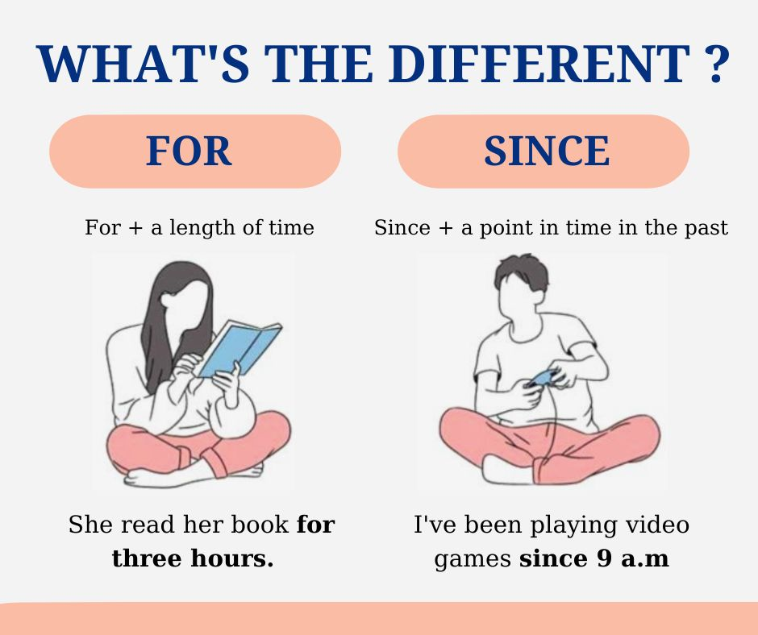

Trước khi bắt đầu học ngữ pháp Tiếng Anh
Nhớ đọc hướng dẫn tự học Tiếng Anh nhaaaaaa
20 Quy Tắc Ngữ Pháp Cần Nhớ
Sau đây là 20 quy tắc ngữ pháp giúp bạn tránh được các lỗi trong ngữ pháp tiếng Anh.
1. Một câu bắt đầu bằng một chữ cái in hoa và kết thúc bằng một dấu chấm câu, một dấu hỏi hoặc một dấu chấm than.
- T he fat cat sat on the mat .
- W here do you live ?
- M y dog is very clever !
2. Thứ tự của một câu khẳng định cơ bản là Subject-Verb-Object (Chủ ngữ – Động từ – Tân ngữ).
Câu phủ định và câu hỏi có thể có thứ tự khác nhau.
- John loves Mary .
- They were driving their car to Bangkok.
3. Mỗi câu có phải có một chủ ngữ và một động từ, tân ngữ có thể không cần thiết phải có. Lưu ý rằng một câu mệnh lệnh có thể chỉ có động từ nhưng chủ ngữ đã được ngụ ý hiểu ngầm.
- John teaches .
- John teaches English.
- Stop! (i.e. You stop!)
4. Chủ ngữ và động từ phải hòa hợp với nhau về số lượng, tức là một chủ ngữ số ít thì cần có một động từ chia ở dạng số ít và một chủ ngữ số nhiều cần đi với một động từ ở dạng số nhiều.
- John works in London.
- That monk eats once a day.
- John and Mary work in London.
- Most people eat three meals a day.
5. Khi hai chủ ngữ số ít được nối với nhau bằng or thì sẽ dùng động từ ở dạng số ít. Điều này tương tự nếu các chủ ngữ nối với nhau bằng either/or và neither/nor.
- John or Mary is coming tonight.
- Either coffee or tea is fine.
- Neither John nor Mary was late.
6. Tính từ thường đứng trước danh từ ( ngoại trừ trường hợp một động từ làm tách riêng tính từ ra khỏi danh từ.
- I have a big dog.
- She married a handsome Italian man.
- (Her husband is rich.)
7. Khi trong câu có hai hoặc nhiều tính từ kết hợp với nhau thì thứ tự sẽ là: Tính từ chỉ quan điểm + Tính từ chỉ thực tế + Danh từ
Fact adjective (tính từ thực tế) mô tả những thứ như màu sắc, hoa văn, hình dạng, tuổi tác, chất liệu, xuất xứ, v.v. Đây là những thứ thường được mọi người đồng ý và chấp nhận là luôn đúng. Opinion adjective (tính từ quan điểm) mô tả những gì chúng ta nghĩ hoặc cách chúng ta cảm nhận về ai đó hoặc điều gì đó. Những suy nghĩ và cảm nhận này là khác nhau ở mỗi người nên chúng là opinion (ý kiến) chứ không phải fact (sự thật).
- I saw a nice French table.
- That was an interesting Shakespearian play.
8. Danh từ tập hợp (e.g. committee, company, board of directors) được coi như ở dạng số ít hoặc số nhiều. Trong tiếng Anh-Anh thì danh từ tập hợp được coi như ở dạng số nhiều và cần đi theo với động từ và đại từ ở dạng số nhiều. Trong tiếng Anh-Mỹ thì một danh từ tập hợp thường được coi như ở dạng số ít và cần đi theo với động từ và đại từ ở dạng số ít.
- The committee are having sandwiches for lunch. Then they will go to London. (typically BrE)
- The BBC have changed their logo. (typically BrE)
- My family likes going to the zoo. (typically AmE)
- CNN has changed its logo. (typically AmE)
9. Các từ its và it's là hai từ khác nhau và có nghĩa khác nhau.
- The dog has hurt its leg.
- He says it's two o'clock.
10. Các từ your và you're là hai từ khác nhau và có nghĩa khác nhau.
- Here is your coffee.
- You're looking good.
11. Các từ there, their và they're là ba từ khác nhau và có nghĩa khác nhau.
- There was nobody at the party.
- I saw their new car.
- Do you think they're happy?
12. Từ viết tắt he's có thể là dạng viết tắt của he is hoặc he has. Tương tự, _she's_có thể là dạng viết tắt của she is hoặc she has, và _it's_có thể là dạng viết tắt của it is hoặc it has, và _John's_có thể là dạng viết tắt của John is hoặc John has.
- He is working
- He has finished.
- She is here.
- She has left.
- John is married.
- John has divorced his wife.
13. Từ viết tắt _he'd_có thể là dạng viết tắt của he had hoặc he would. Tương tự, _they'd_có thể là dạng viết tắt của they had hoặc they would.
- He had eaten when I arrived.
- He would eat more if possible.
- They had already finished.
- They would come if they could.
14. Danh từ riêng sẽ được viết hoa ở chữ cái đầu tiên. Một danh từ riêng là tên của cái gì đó, ai đó, ví dụ Josef, Mary, Russia, China, British Broadcasting Corporation, English.
- We have written to Mary.
- Is China in Asia?
- Do you speak English?
15. Tính từ riêng sẽ được viết hoa ở chữ cái đầu tiên. Tính từ riêng được tạo ra từ danh từ riêng. Ví dụ: Germany → German, Orwell → Orwellian, Machiavelli → Machiavellian.
- London is an English town.
- Who is the Canadian prime minister?
- Which is your favourite Shakespearian play?
16. Dùng mạo từ không xác định a/an cho các danh từ đếm được nói chung. Dùng mạo từ xác định the cho những danh từ đếm được và được ngụ ý và dùng cho tất cả danh từ không đếm được.
- I saw a bird and a balloon in the sky. The bird was blue and the balloon was yellow.
- He always saves some of the money that he earns.
17. Dùng mạo từ không xác định a với những từ bắt đầu bằng một phụ âm. Dùng mạo từ không xác định an với những từ bắt đầu bằng một nguyên âm hoặc được phát âm như một nguyên âm.
- a c at, a g ame of golf, a h uman endeavour, a F renchman, a u niversity ( you-ni-ver-si-ty)
- an a pple, an e asy job, an i nteresting story, an o ld man, an u mbrella, an h onorable man ( on-o-ra-ble)
18. Dùng many hoặc few với những danh từ đếm được. Dùng much/a lot hoặc little cho những danh từ không đếm được.
- How many dollars do you have?
- How much money do you have?
- There are a few cars outside.
- There is little traffic on the roads.
19. Để chỉ sự sở hữu (ai đó sở hữu cái gì đó) thì ta dùng một dấu sở hữu cách ‘ + s cho người hoặc vật sở hữu số ít, và dùng s + một dấu sở hữu cách ‘ cho người hoặc vật sở hữu số nhiều.
- The boy ‘s dog. (one boy)
- The boy s' dog. (two or more boys)
20. Thông thường, dùng thể chủ động (Cats eat fish) được ưu tiên hơn so với dùng thể bị động (Fish are eaten by cats).
- We use active in preference to passive.
- Active is used in preference to passive.
"Đơn giản hóa" Parts Of Speech trong Tiếng Anh
Trong tiếng Anh, từ vựng được chia ra làm 9 loại là:
Mỗi từ loại trong tiếng Anh đóng một vai trò và chức năng riêng biệt, và đứng ở một vị trí quy định. Nếu muốn sử dụng tiếng Anh tốt hơn, bạn cần biết các từ thuộc từ loại nào và có chức năng gì, đứng ở đâu trong câu.
Sự khác nhau giữa "Từ loại" và "Loại từ"
Phần này mình xin phép được trích từ bài viết Từ Loại và Loại Từ Khác Nhau Như Thế Nào - Khám Phá Sự Khác Biệt
Trong ngôn ngữ học, khái niệm từ loại và loại từ thường được sử dụng để phân tích và hiểu rõ hơn về cấu trúc của ngôn ngữ. Dưới đây là sự khác biệt chi tiết giữa từ loại và loại từ trong tiếng Việt.
Từ Loại
Từ loại (parts of speech) là các nhóm từ có cùng chức năng ngữ pháp và thuộc tính giống nhau.
[...]
Loại Từ Loại từ (word type) là khái niệm rộng hơn, bao gồm cả từ đơn lẻ và cụm từ. Chúng được phân loại dựa trên ý nghĩa, cấu trúc, và ngữ cảnh sử dụng. Một số loại từ phổ biến gồm:
Từ đơn: Từ có nghĩa đầy đủ và có thể đứng độc lập. Ví dụ: nhà, cây.
Cụm từ: Tập hợp từ có nghĩa khi kết hợp với nhau. Ví dụ: ngôi nhà lớn, một cánh rừng xanh.
Điểm Khác Biệt Chính
Từ loại tập trung vào vai trò và chức năng của từ trong câu, giúp xác định cách từ đó tham gia vào cấu trúc ngữ pháp. Trong khi đó, loại từ đề cập đến việc phân loại từ dựa trên ý nghĩa và cấu trúc, bao gồm cả từ đơn và cụm từ.
Phần hôm nay chúng ta sẽ học là Từ loại hay Parts Of Speech.
Tìm hiểu cơ bản về từ loại
1. Danh từ
Danh từ là từ loại chỉ người, địa điểm, khái niệm hoặc đồ vật. Về cơ bản, bất cứ thứ gì là "vật", sự vật, hiện tượng... đều là một danh từ.
Danh từ có thể được chia thành các loại: danh từ chung và danh từ riêng -- số ít và số nhiều -- đếm được hay không đếm được. Khi học cụ thể về danh từ bạn sẽ hiểu các loại này.
Ví dụ: worker, apple, Paris, sugar...
2. Động từ
Động từ là từ loại diễn tả hành động, một tình trạng hay một cảm xúc. Động từ trong tiếng Anh giúp xác định chủ từ đang làm hay trong trạng thái như thế nào.
Ví dụ: go, like, say...
3. Tính từ
Tính từ là từ loại chỉ tính chất của sự vật, sự việc, hiện tượng
Ví dụ: nice, small, fast, strong...
4. Trạng từ
Trạng từ là từ loại trong tiếng Anh nêu ra trạng thái hay tình trạng, thường bổ sung ý nghĩa cho tính từ hoặc động từ
Ví dụ: often, slowly, usually,...
5. Giới từ
Giới từ là từ loại dùng để diễn tả mối tương quan về hoàn cảnh, thời gian hay vị trí của các sự vật, sự việc được nói đến.
Có nhiều giới từ quen thuộc mà chắc chắn bạn đã biết như: in, on, behind, at, up, for, with...
Đi sau giới từ thường là Object -- Tân ngữ, Verb-ing, cụm danh từ,...
Giới từ cho bạn biết mối quan hệ giữa các từ khác trong câu.
6. Đại từ
Đại từ là từ loại thay thế cho danh từ cụ thể khi người đọc hoặc người nghe biết bạn đang đề cập đến danh từ cụ thể nào.
Với nhiều chức năng khác nhau, đại từ trong tiếng Anh được phân ra các loại chính như sau: Đại từ nhân xưng (Personal pronouns), đại từ sở hữu (Possessive pronoun), đại từ phản thân (reflexive pronouns) và đại từ nhấn mạnh.
Ví dụ: I, you, him, her...
7. Liên từ
Liên từ là từ loại dùng để liên kết các cụm từ, các câu và các đoạn văn khi xây dựng các câu phức tạp thể hiện nhiều ý tưởng.
Liên từ được chia làm 3 loại:
- Liên từ kết hợp (Coordinating Conjunctions)
- Liên từ tương quan (Correlative Conjunctions)
- Liên từ phụ thuộc (Subordinating Conjunctions)
Ví dụ: And, so, however...
8. Từ hạn định
Mình có thấy bài viết này và một số bài viết khác để phần này là mạo từ nhưng theo mình thấy là nó chưa đủ. Mạo từ là một nhóm nhỏ của từ hạn định
Các từ hạn định hay chỉ định từ là những từ thường được đặt trước các danh từ xác định để chỉ một người/sự việc/sự vật cụ thể hoặc đặc biệt mà bạn đang đề cập đến.
9. Thán từ
Thán từ là từ loại diễn tả tình cảm hay cảm xúc đột ngột, không ngờ. Các từ loại này không can thiệp vào cú pháp của câu như Oh!, Um hoặc Ah!. Chúng không có giá trị thực sự về mặt ngữ pháp nhưng thường được sử dụng khá thường xuyên và chủ yếu là trong văn nói. Thán từ thường đứng một mình và đôi khi theo sau bởi một dấu chấm than (!)
Bài viết này được lấy nguồn từ bài viết này đồng thời được mình hiệu đính lại phần định dạng bài viết và bổ sung thêm các thông tin từ các nguồn khác.
Tất tần tật về Động từ trong Tiếng Anh
!!! info "Định dạng bài viết" Có khá nhiều bài viết trong mục này chưa được chỉnh sửa lại định dạng. Số lượng bài viết trong mục này rất nhiều nên làm chưa xong. Khi nào xong toàn bộ bài viết thì thông báo này sẽ được xóa :D
Động từ là gì?
Động từ là từ chỉ hành động (I speak English) và trạng thái (He seems normal).
Động từ luôn đi cùng với chủ ngữ và động từ để chỉ hành động hoặc trạng thái của chủ ngữ.
verbs are words that tell us what a subject does or is (EnglishClub)
Phân loại động từ
Động từ có hai loại: main verbs (Động từ chính hay "Động từ thường"), helping verbs (Hay còn gọi là trợ động từ).
Trợ động từ
Hãy tưởng tượng đột nhiên một thằng cha nào đấy xuất hiện trước mặt bạn và nói:
- 'I can'
- 'I must'
- 'I shouldn't'
Bạn có hiểu gã ấy đang nói gì không? Chắc chắn là không. Những động từ ở trên được gọi là "helping verbs" hay trợ động từ và bản thân trợ động từ không có ý nghĩa, nhưng lại có vai trò quan trọng trong cấu trúc ngữ pháp của câu. Chúng đi cùng với động từ chính (main verbs) và bổ trợ cho động từ chính (trong câu, trợ động từ cần ít nhất một động từ chính). Chỉ có khoảng 15 trợ động từ.
Động từ chính
Là động từ có ý nghĩa, kể cả khi đứng độc lập. Ví dụ như 'I speak', 'He teaches', 'People eat' chẳng hạn.
Động từ chính còn có nhiều dạng nữa nhưng chắc là đề cập sau.
Dạng động từ
Danh sách các dạng động từ bao gồm:
- base V1 (Dạng gốc)
- past simple V2 (Quá khứ phân từ 2)
- past participle V3 (Quá khứ phân từ 3)
- present participle (Hiện tại phân từ)
- 3rd person singular present simple (Hiện tại ngôi thứ 3)
Trong bảng này, các ô được bỏ trống có nghĩa là dạng tiếp theo của nó cũng sẽ tương tự dạng trước. Ví dụ như từ "made" thì V2 và V3 đều là made nên ô ở V3 sẽ được bỏ trống.
| V1 | V2 | V3 | present participle | 3rd person singular present simple | |
|---|---|---|---|---|---|
| Có quy tắc | work | worked | working | works | |
| Bất quy tắc | cut | cutting | cuts | ||
| make | made | making | makes | ||
| sing | sang | sung | singing | sings |
Thì Tiếng Anh
Thì trong ngôn ngữ là gì?
Khi nói về thì thì không thể không nói đến time và aspect.
Time để chỉ:
- quá khứ - trước bây giờ
- hiện tại - bây giờ
- tương lai - sau bây giờ
Aspect để chỉ:
- tiếp diễn - uncompleted action
- hoàn thành - completed action or state

Hệ thống thì trong Tiếng Anh
12 thì cơ bản
- Thì hiện tại
- Thì quá khứ
- Thì tương lai
Các dạng động từ trong các kiểu câu khác nhau
I am going to do it
I am about to do it
for Time, for two days, since 1st April
Dạng bị động: Cats eat mice. Mice are eaten by cats.
I am not used to it. I used to do it.
Future Time - Chưa có bài viết
I will do it. I am going to do it. I am doing it. I do it.
Câu điều kiện: if I win, if I won, if I had won
- Bản chất của câu điều kiện
- Các loại câu điều kiện
- Thì của động từ trong câu điều kiện
- Những cách khác để diễn tả câu điều kiện
can, shall, must...
put out, look after, get on with
Do you like tea? Why do you like tea? Do you like tea or coffee?
You hate me, don't you?
In general a subject and a verb must agree in number.
Một số chủ đề khác
Thể sai khiến
Thể sai khiến được dùng để diễn tả một người nào đó đã giúp chúng ta thực hiện một công việc nào đó.
Thì hiện tại đơn (Present Simple Tense)
Thì hiện tại đơn (Present Simple Tense) là một thì trong tiếng Anh dùng để diễn tả một hành động hoặc sự việc xảy ra thường xuyên, lặp đi lặp lại, hoặc là một sự thật hiển nhiên. Dưới đây là cách sử dụng và cấu trúc của thì hiện tại đơn
Xây dựng câu ở thì hiện tại đơn
| Dạng | Chủ ngữ | Trợ động từ | Động từ chính | Phần còn lại của câu |
|---|---|---|---|---|
| Khẳng định | She | walks | to school every day | |
| They | play | soccer on weekends | ||
| Phủ định | He | does not (doesn't) | like | coffee |
| We | do not | (don't) | watch | |
| Nghi vấn | Does she | play | the piano? | |
| Do they | go | to the gym? |
Với câu khẳng định:
- Đối với chủ ngữ số ít (he, she, it - đúng hơn là "third person singular"): Động từ thêm "s/es".
- Đối với chủ ngữ số nhiều và I (you, we, they): động từ nguyên thể.
Với câu phủ định và câu hỏi:
- Trợ động từ được chia về thì hiện tại đơn: do, does
- Động từ chính ở dạng nguyên thể
- Ở câu phủ định thì ta thêm not vào sau trợ động từ: do not (don't), does not (doesn't)
- Ở câu hỏi thì ta đảo trợ động từ lên đầu câu: does she, do I chứ không phải she does hoặc I do nữa.
Dùng do để nhấn mạnh
Bình thường thì trong câu khẳng định sẽ không cần dùng do, nhưng nếu muốn nhấn mạnh thì có thể sử dụng do. Ví dụ như: "I do wish you'd be fine" hoặc "I do like it".
Với động từ chính là be
| Chủ ngữ | động từ chính be | |||
|---|---|---|---|---|
| Khẳng định | I | am | Vietnamese. | |
| You, we, they | are | Vietnamese. | ||
| He, she, it | is | Vietnamese. | ||
| Phủ định | I | am | not | late |
| You, we, they | are | not | late. | |
| He, she, it | is | not | late. | |
| Nghi vấn | am I (+ not) | late | ||
| are (+ not) | you, we, they | late. | ||
| is (+ not) | he, she, it | late. |
Cấu trúc bảng được lấy từ EnglishClub
Có thể rút ra được từ những ví dụ:
- Sẽ không có trợ động từ (do, does) kể cả khi ở dạng phủ định hoặc bị động.
- Động từ chính là be sẽ được chia dạng động từ.
- Với câu phủ định thì ta thêm not đằng sau động từ chính (ở đây là am, is, are)
Cách sử dụng
- Thói quen, hành động lặp đi lặp lại hoặc xảy ra đều đặn, thường xuyên.
- I go to school every day (Tôi đi học mỗi ngày)
- I live in Hanoi (Tôi sống ở Hà Nội) - Mình đang sống ở Hà Nội, mình đã sống ở Hà Nội từ quá khứ, bây giờ cũng ở Hà Nội và tương lai cũng sẽ ở Hà Nội (Có thể chuyển nhà vào thời điểm nào đó trong tương lai :D)
- Sự thật hiển nhiên hoặc chân lý: Những điều đúng với mọi thời điểm.
- The sun rises in the east. (Mặt trời mọc ở hướng đông.)
Một số lưu ý
- Các từ chỉ tần suất (always, usually, often, sometimes, never) thường đứng trước động từ chính. Ví dụ: I always do my homework.
Tham khảo
- Thì hiện tại đơn (Present Simple Tense) - hitbooksvn
- Thì Hiện Tại Đơn (Simple Present Tense) - clevaimath
- Present Simple tense - EnglishClub
Hiện tại tiếp diễn
Ví dụ
Hãy xem ví dụ mẫu sau:
She is driving. (Cô ấy đang lái xe)
Điều này có nghĩa là, ngay lúc này, ngay tại thời điểm chúng ta nói, cô ấy đang lái xe.
| I am = I’m | driving |
| he/ she/ it is = (he’s, she’s,….) | |
| We/ they/ you are = we’re, they’re…. |
Chúng ta dùng thì Present Continuous (Hiện tại tiếp diễn) khi nói về một việc nào đó đang diễn ra ngay lúc nói:
- Please don’t make so much noise. I’m studying. (Không dùng “I study”).
- “Where is Margaret?” “She’s having a bath.” (Không dùng “She has”)
- Let’s go out now. It isn’t raining any more.
- (at a party) Hello, Ann. Are you enjoying the party?
Chúng ta cũng dùng Present Continuous khi nói về một việc nào đó diễn ra trong khoảng thời gian của lúc nói, nhưng không nhất thiết chính xác ngay lúc nói.
Hãy xem tình huống mẫu sau:
- Tome and Ann are talking and drinking in a cafe. Tom says: “I’m reading an interesting book at the moment. I’ll lend it to you when I’ve finished it.”
Tom không đọc cuốn sách đó vào lúc anh ta nói. Anh ấy có ý nói rằng anh ấy đã bắt đầu đọc trước đó và hiện thời thì chưa đọc xong. Anh ấy đang đọc nửa chừng. Sau đây là một số ví dụ khác:
- Silvia is learning English at the moment.
- Have you heard about Tom? He is building his own house.
Nhưng có thể là ngay lúc nói Silvia và Tom đang không thực hiện những công việc này.
Chúng ta thường dùng Present Continuous khi nói về khoảng thời gian bao gồm cả hiện tại.
Ví dụ: today, this season….
- “You’re working hard today.” “Yes, I have a lot to do.”
- Tom isn’t playing football this season. He wants to concentrate on his studies.
Chúng ta dùng Present Continuous khi nói về những tình huống đang thay đổi.
- The population of the world is rising very fast. (Không dùng “rises”)
- Is your English getting better? (Không dùng “does….get?”)
Tham khảo
Chưa có
Present Perfect (Thì hiện tại hoàn thành)
FORM
[has/have + past participle]
Ví dụ:
- You have seen that movie many times.
- Have you seen that movie many times?
- You have not seen that movie many times.
Một thời điểm không xác định trước thời điểm hiện tại

Chúng ta dùng thì hiện tại hoàn thành để diễn tả một hành động xảy ra tại một thời điểm không xác định trước thời điểm hiện tại. Thời điểm chính xác không quan trọng. Bạn KHÔNG THỂ dùng thì hiện tại hoàn thành với những từ chỉ một thời điểm xác định, chẳng hạn như: yesterday, one year ago, last week, when I was a child, when I lived in Japan, at that moment, that day, one day, v.v... Chúng ta CÓ THỂ dùng thì hiện tại hoàn thành với những từ chỉ thời điểm không xác định, chẳng hạn như: ever, never, once, many times, several times, before, so far, already, yet, v.v...
Ví dụ:
- I have seen that movie twenty times.
- I think I have met him once before.
- There have been many earthquakes in California.
- People have traveled to the Moon.
- People have not traveled to Mars.
- Have you read the book yet?
- Nobody has ever climbed that mountain.
A: Has there ever been a war in the United States?
-
B: Yes, there
-
has been
-
a war in the United States.
Khái niệm "thời điểm không xác định" có thể sẽ rất khó hiểu đối với những người học tiếng Anh. Do đó cách tốt nhất là liên hệ thì hiện tại hoàn thành với những chủ đề sau:
CHỦ ĐỀ 1: KINH NGHIỆM
Bạn có thể dùng thì hiện tại hoàn thành để diễn tả kinh nghiệm của mình. Cũng giống như khi bạn nói: "I have the experience of . . ." Bạn cũng có thể dùng thì này để nói rằng mình chưa từng có những kinh nghiệm như vậy. Thì hiện tại hoàn thành không được dùng để mô tả một hiện tượng xác định nào đó.
Ví dụ:
I have been to France.
- Câu này có nghĩa là bạn đã có kinh nghiệm sống ở Pháp. Có thể bạn đã ở đó 1 lần, hoặc một vài lần.
I have been to France three times.
- Bạn có thể thêm vào số lần ở cuối câu.
I have never been to France.
-
Câu này có nghĩa là bạn chưa từng có kinh nghiệm đến Pháp.
-
I think I have seen that movie before.
-
He has never traveled by train.
-
Joan has studied two foreign languages.
A: Have you ever met him?
-
B: No, I
-
have
-
not
-
met
-
him.
CHỦ ĐỀ 2: NHỮNG THAY ĐỔI THEO THỜI GIAN
Chúng ta thường dùng thì hiện tại hoàn thành để nói về những thay đổi xảy ra trong một khoảng thời gian.
Ví dụ:
- You have grown since the last time I saw you.
- The government has become more interested in arts education.
- Japanese has become one of the most popular courses at the university since the Asian studies program was established.
- My English has really improved since I moved to Australia.
CHỦ ĐỀ 3: NHỮNG THÀNH TỰU, THÀNH QUẢ ĐÃ ĐẠT ĐƯỢC
Chúng ta thường dùng thì hiện tại hoàn thành để liệt kê những thành tựu mà một cá nhân hay loài người đã đạt được. Bạn không thể đề cập đến một thời điểm xác định.
Ví dụ:
- Man has walked on the Moon.
- Our son has learned how to read.
- Doctors have cured many deadly diseases.
- Scientists have split the atom.
CHỦ ĐỀ 4: HÀNH ĐỘNG CHƯA HOÀN THÀNH MÀ BẠN ĐANG MONG ĐỢI
Chúng ta thường dùng thì hiện tại hoàn thành để nói về một hành động mà chúng ta mong đợi hoặc không mong đợi. Dùng thì hiện tại hoàn thành để thể hiện rằng chúng ta vẫn còn đang chờ đợi hành động đó xảy ra.
Ví dụ:
- James has not finished his homework yet.
- Susan hasn't mastered Japanese, but she can communicate.
- Bill has still not arrived.
- The rain hasn't stopped.
CHỦ ĐỀ 5: NHIỀU HÀNH ĐỘNG XẢY RA Ở NHỮNG THỜI ĐIỂM KHÁC NHAU
Chúng ta cũng có thể dùng thì hiện tại hoàn thành để nói về nhiều hành động khác nhau xảy ra ở quá khứ tại những thời điểm khác nhau. Thì hiện tại hoàn thành có ý nghĩa là quá trình đó vẫn chưa kết thúc và có thể còn nhiều hành động khác nữa.
Ví dụ:
- The army has attacked that city five times.
- I have had four quizzes and five tests so far this semester.
- We have had many major problems while working on this project.
- She has talked to several specialists about her problem, but nobody knows why she is sick.
Thì hiện tại hoàn thành và những từ chỉ thời gian
Khi chúng ta dùng thì hiện tại hoàn thành thì có nghĩa là có một điều gì đó đã xảy ra ở một thời điểm trong cuộc sống của chúng ta trước thời điểm hiện tại. Lưu ý là thời điểm chính xác lúc hành động xảy ra không quan trọng.
Đôi khi chúng ta muốn giới hạn lại khoảng thời gian của những hành động này, chúng ta có thể dùng những thành ngữ chỉ thời gian như sau: in the last week, in the last year, this week, this month, so far, up to now v.v...

Ví dụ:
- Have you been to Mexico in the last year?
- I have seen that movie six times in the last month.
- They have had three tests in the last week.
- She graduated from university less than three years ago. She has worked for three different companies so far.
- My car has broken down three times this week.
LƯU Ý
"Last year" và "in the last year" có ý nghĩa rất khác nhau. "Last year" có nghĩa là vào năm trước, nó được xem là một thời điểm xác định và phải dùng thì quá khứ đơn. Còn "in the last year" có nghĩa là một khoảng thời gian kéo dài từ 365 ngày trước đây cho đến bây giờ. Nó không được xem là một thời điểm xác định và do đó cần phải dùng thì hiện tại hoàn thành.
Ví dụ:
I went to Mexico last year. (Tôi đã đến Mexico vào năm trước được tính trên lịch so với năm nay, ví dụ nếu năm nay là năm 2011 thì người nói câu này muốn nói rằng mình đã đến Mexico vào năm 2010, và "năm 2010" được xem là một thời điểm xác định)
I have been to Mexico in the last year. (Tôi đã đến Mexico ít nhất 1 lần tại một thời điểm nào đó trong khoảng thời gian tính từ 365 ngày trước đây cho đến bây giờ, và khoảng thời gian này không phải là một thời điểm xác định)
Kéo dài từ quá khứ cho đến hiện tại (Non-Continuous Verb)
Với các Non-Continuous Verb và những Mixed Verb với nghĩa non-continuous, chúng ta dùng thì hiện tại hoàn thành để diễn tả những hành động xảy ra trong quá khứ và tiếp tục kéo dài cho đến thời điểm hiện tại. "For five minutes," "for two weeks," và "since Tuesday" đều có thể được dùng với thì Present Perfect.
Ví dụ:
- I have had a cold for two weeks.
- She has been in England for six months.
- Mary has loved chocolate since she was a little girl.
Mặc dù cách dùng này giới hạn trong những động từ non-continuous và mixed verb với ý nghĩa non-continuous, các từ như "live," "work," "teach," và "study" đôi khi có thể được dùng theo cách này mặc dù chúng không phải là các Non-Continuous Verb.
Cách đặt Adverb
Những ví dụ dưới đây mô tả các đặt các adverb như: always, only, never, ever, still, just, v.v... vào một câu ở thì hiện tại hoàn thành:
Ví dụ:
- You have only seen that movie one time.
- Have you only seen that movie one time?
CHỦ ĐỘNG / BỊ ĐỘNG
Ví dụ:
- Many tourists have visited that castle. Chủ động
- That castle has been visited by many tourists. Bị động
Present Perfect Continuous (Thì hiện tại hoàn thành tiếp diễn)
Cấu trúc
[has/have + been + present participle]
Ví dụ:
- You have been waiting here for two hours.
- Have you been waiting here for two hours?
- You have not been waiting here for two hours.
Cách dùng
1. Một diễn tiến từ quá khứ kéo dài đến hiện tại.

Chúng ta dùng thì hiện tại hoàn thành tiếp diễn để mô tả một sự việc bắt đầu trong quá khứ và tiếp tục cho đến hiện tại. "For five minutes", "for two weeks", và "since Tuesday" là những khoảng thời gian có thể được dùng với thì hiện tại hoàn thành tiếp diễn.
Ví dụ:
- They have been talking for the last hour.
- She has been working at that company for three years.
- What have you been doing for the last 30 minutes?
- James has been teaching at the university since June.
- We have been waiting here for over two hours!
- Why has Nancy not been taking her medicine for the last three days?
2. Recently, Lately

Chúng ta cũng có thể dùng thì hiện tại hoàn thành tiếp diễn mà không cần những từ chỉ các khoảng thời gian như "for two weeks" giống như ở cách dùng thứ 1. Nếu không có những từ như vậy thì hiện tại hoàn thành tiếp diễn sẽ có nghĩa chung là mới gần đây. Chúng ta thường dùng các từ như "lately" hoặc "recently" để nhấn mạnh nghĩa này.
Ví dụ:
- Recently, I have been feeling really tired.
- She has been watching too much television lately.
- Have you been exercising lately?
- Mary has been feeling a little depressed.
- Lisa has not been practicing her English.
- What have you been doing?
QUAN TRỌNG
Bạn cần nhớ là thì hiện tại hoàn thành tiếp diễn có nghĩa là những sự việc xảy ra gần đây. Nếu bạn dùng thì hiện tại hoàn thành tiếp diễn trong những câu hỏi kiểu như "Have you been feeling alright?", nó có thể có ý là người được hỏi trong có vẻ mệt mỏi. Còn một câu hỏi kiểu như là "Have you been smoking?" có thể có ý là bạn ngửi thấy mùi thuốc lá trên người được hỏi. Sử dụng thì hiện tại hoàn thành tiếp diễn trong câu hỏi có nghĩa là bạn có thể nhìn thấy, ngửi thấy, nghe thấy, hoặc cảm thấy kết quả của hành động đó. Nếu sử dụng sai thì này, bạn có nguy cơ bị hiểu lầm là đang sỉ nhục, lăng mạ người khác.
CẦN NHỚ
Điều quan trọng cần nhớ là các động từ Non-Continuous không thể được dùng với bất kỳ thì tiếp diễn nào. Ngoài ra, một số Mixed Verb nếu được dùng với ý nghĩa non-continuous cũng không thể được dùng trong các thì tiếp diễn. Thay vì dùng thì hiện tại hoàn thành tiếp diễn với những động từ như vậy, bạn phải dùng thì hiện tại hoàn thành.
Ví dụ
- Sam has been having his car for two years. Không đúng
- Sam has had his car for two years. Đúng
Cách đặt adverb
Những ví dụ dưới đây mô tả các đặt các adverb như: always, only, never, ever, still, just, v.v... vào một câu ở thì hiện tại hoàn thành tiếp diễn:
- You have only been waiting here for one hour.
- Have you only been waiting here for one hour?
CHỦ ĐỘNG / BỊ ĐỘNG
Ví dụ:
- Recently, John has been doing the work. Chủ động
- Recently, the work has been being done by John. Bị động
LƯU Ý: Thì hiện tại hoàn thành tiếp diễn hiếm khi được sử dụng ở thể bị động.
!!! info "Nguồn" Nguồn bài viết
Simple Past (Quá khứ đơn)
Cấu trúc: Thêm "-ed" vào động từ gốc hoặc sử dụng dạng quá khứ của các động từ bất quy tắc.
Ví dụ:
- You called Debbie.
- Did you call Debbie?
- You did not call Debbie.
CÁCH DÙNG:
1. Hành động đã hoàn thành trong quá khứ.

Dùng thì quá khứ đơn để diễn tả một hành động bắt đầu và kết thúc vào một thời điểm nhất định trong quá khứ. Đôi khi người nói không thật sự nêu ra một thời điểm nào đó chính xác khi nói nhưng họ có trong đầu một thời điểm chính xác nào đó.
Ví dụ:
- I saw a movie yesterday.
- I didn't see a play yesterday.
- Last year, I traveled to Japan.
- Last year, I didn't travel to Korea.
2. Một chuỗi các hành động đã kết thúc.

Chúng ta sử dụng quá khứ đơn để liệt kê các chuỗi hành động đã kết thúc trong quá khứ. Những hành động này xảy ra theo thứ tự 1, 2, 3, 4 v.v...
Ví dụ:
- I finished work, walked to the beach, and found a nice place to swim.
- He arrived from the airport at 8:00, checked into the hotel at 9:00, and met the others at 10:00.
- Did you add flour, pour in the milk, and then add the eggs?
3. Một diễn tiến trong quá khứ.

Quá khứ đơn còn có thể được dùng để diễn tả một diễn tiến khởi đầu và kết thúc trong quá khứ. Một diễn tiến là một hành động kéo dài và thường được mô tả bằng các từ như: for two years, for five minutes, all day, all year, v.v...
Ví dụ:
- I lived in Brazil for two years.
- Shauna studied Japanese for five years.
- They sat at the beach all day.
- They did not stay at the party the entire time.
- We talked on the phone for thirty minutes.
4. Các thói quen trong quá khứ

Thì quá khứ đơn cũng có thể được dùng để mô tả một thói quen đã không còn nữa trong quá khứ. Nó có cùng nghĩa với "used to". Để bảo đảm rằng người nghe hiểu người nói đang nói đến một thói quen nào đó, người nói thường thêm vào các từ sau: always, often, usually, never, when I was a child, when I was younger, v.v...
Ví dụ:
- I studied French when I was a child.
- He played the violin.
- He didn't play the piano.
- Did you play a musical instrument when you were a kid?
- She worked at the movie theater after school.
- They never went to school, they always skipped class.
5. Những sự thật và khái quát hóa trong quá khứ.

Thì quá khứ đơn cũng có thể được dùng để mô tả những sự thật hoặc những điều khái quát hóa mà trong hiện tại không còn đúng nữa. Cũng giống như ở cách dùng thứ 4, ở cách dùng này, thì quá khứ đơn khá giống với cách dùng "used to"
Ví dụ:
- She was shy as a child, but now she is very outgoing.
- He didn't like tomatoes before.
- Did you live in Texas when you were a kid?
- People paid much more to make cell phone calls in the past.
QUAN TRỌNG: Mệnh đề When luôn luôn xảy ra trước.
Mệnh đề (clause) là một cụm từ có nghĩa nhưng thường chưa phải là một câu hoàn chỉnh. Một số mệnh đề bắt đầu với từ "when", chẳng hạn như "when I dropped my pen..." hoặc "when class began...". Những mệnh đề này được gọi là các mệnh đề when. Những ví dụ sau có chứa mệnh đề when:
- When I paid her one dollar, she answered my question.
- She answered my question when I paid her one dollar.
Mệnh đề when luôn luôn diễn ra đầu tiên, trước mệnh đề còn lại trong cùng một câu ghép khi cả hai mệnh đề đều ở thì quá khứ đơn. Cả hai ví dụ phía trên đều có cùng một ý nghĩa: đầu tiên, tôi trả cho cô ta 1 dollar, rồi sau đó cô ấy mới trả lời câu hỏi của tôi. Mệnh đề "when I paid her one dollar" nằm ở đầu câu hay cuối câu không quan trọng.Tuy nhiên, ở ví dụ phía sau đây nó lại có một ý nghĩa khác: đầu tiên cô ấy trả lời câu hỏi của tôi rồi sau đó tôi mới trả cho cô ấy 1 dollar.
However, the example below has a different meaning. First, she answered my question, and then, I paid her one dollar.
- I paid her one dollar when she answered my question.
Cách thêm Adverb:
Những ví dụ dưới đây chỉ cách thêm các adverb như: always, only, never, ever, still, just, v.v... vào câu ở thì quá khứ đơn.
- You just called Debbie.
- Did you just call Debbie?
Chủ động/Bị động
- Tom repaired the car. Chủ động.
- The car was repaired by Tom. Bị động
Nguồn
Past Continuous (Thì quá khứ tiếp diễn)
FORM
[was/were + present participle]
Ví dụ:
- You were studying when she called.
- Were you studying when she called?
- You were not studying when she called.
CÁCH DÙNG
1. Một hành động bị gián đoạn trong quá khứ

Sử dụng thì quá khứ tiếp diễn để diễn tả một hành động kéo dài trong quá khứ đã bị gián đoạn. Tác nhân gây gián đoạn thường là một hành động ngắn hơn được chia ở thì hiện tại đơn. Đó có thể là một tác nhân gây gián đoạn thật sự hoặc chỉ gây gián đoạn trong một khoảng thời gian nào đó.
Ví dụ:
- I was watching TV when she called.
- When the phone rang, she was writing a letter.
- While we were having the picnic, it started to rain.
- What were you doing when the earthquake started?
- I was listening to my iPod, so I didn't hear the fire alarm.
- You were not listening to me when I told you to turn the oven off.
- While John was sleeping last night, someone stole his car.
- Sammy was waiting for us when we got off the plane.
- While I was writing the email, the computer suddenly went off.
A: What were you doing when you broke your leg?
-
B: I
-
was snowboarding
-
.
2. Hành động bị gián đoạn bởi một thời điểm nhất định

Ở cách dùng thứ nhất như đã được mô tả phía trên, thì quá khứ tiếp diễn bị gây gián đoạn bởi một hành động ngắn hơn ở thì quá khứ đơn. Tuy nhiên bạn cũng có thể dùng một khoảng thời gian cụ thể làm tác nhân gây gián đoạn.
Ví dụ:
- Last night at 6 PM, I was eating dinner.
- At midnight, we were still driving through the desert.
- Yesterday at this time, I was sitting at my desk at work.
LƯU Ý
Ở thì quá khứ đơn, thời gian được dùng để chỉ thời điểm hành động bắt đầu hoặc kết thúc. Ở thì quá khứ tiếp diễn, thời gian chỉ là tác nhân gây gián đoạn mà thôi.
Ví dụ:
Last night at 6 PM, I ate dinner --> Tôi bắt đầu ăn tối vào lúc 6 PM
Last night at 6 PM, I was eating dinner. --> Tôi bắt đầu ăn tối ở thời điểm trước đó và vào lúc 6 PM, tôi đang trong quá trình ăn tối.
3. Những hành động diễn ra song song

Nếu bạn sử dụng thì quá khứ tiếp diễn với cả 2 hành động trong cùng 1 câu thì có nghĩa là cả 2 hành động đó xảy ra cùng một lúc. Chúng xảy ra song song với nhau.
Ví dụ:
- I was studying while he was making dinner.
- While Ellen was reading, Tim was watching television.
- Were you listening while he was talking?
- I wasn't paying attention while I was writing the letter, so I made several mistakes.
- What were you doing while you were waiting?
- Thomas wasn't working, and I wasn't working either.
- They were eating dinner, discussing their plans, and having a good time.
4. Không khí
Trong tiếng Anh, chúng ta thường dùng một chuỗi các hành động xảy ra song song để diễn tả bầu không khí của môt nơi nào đó trong một khoảng thời gian nhất định trong quá khứ.
Ví dụ:
- When I walked into the office, several people were busily typing, some were talking on the phones, the boss was yelling directions, and customers were waiting to be helped. One customer was yelling at a secretary and waving his hands. Others were complaining to each other about the bad service.
5. Sự lặp đi lặp lại và gây khó chịu, dùng chung với "Always"

Thì hiện tại tiếp diễn được dùng cùng với các từ như "always" hoặc "constantly" diễn tả một việc gây khó chịu hoặc gây shock thường xảy ra trong quá khứ. Ý nghĩa của nó rất giống với "used to" nhưng với cảm giác tiêu cực (không tốt). Lưu ý đặt những từ như "always" hoặc "constantly" giữa "be" và "verb+ing"
Ví dụ:
- She was always coming to class late.
- He was constantly talking. He annoyed everyone.
- I didn't like them because they were always complaining.
While và When
Clause (mệnh đề) là một nhóm từ có ý nghĩa nhưng thường không phải là những câu hoàn chỉnh. Một số mệnh đề được bắt đầu bởi "when", chẳng hạn như "when she called" hoặc "when it bit me". Một số mệnh đề bắt đầu bởi từ "while", chẳng hạn như "while she was sleeping" và "while he was surfing". Khi bạn nói về những việc ở quá khứ, "when" thường được dùng nhiều nhất với các động từ ở thì quá khứ đơn còn "while" thường được dùng ở thì quá khứ tiếp diễn. "While" có ý là "diễn ra trong suốt khoảng thời gian đó". Đọc những ví dụ dưới đây. Chúng có ý nghĩa tương tự nhau nhưng nhấn mạnh ở những điểm khác nhau của câu.
Ví dụ:
- I was studying when she called. (Nhấn mạnh sự kiện cô ấy gọi đến)
- While I was studying, she called. (Nhấn mạnh sự kiện tôi đang học bài)
LƯU Ý: Non-Continuous Verbs / Mixed Verbs
Điểm quan trọng cần nhớ là các Non-continuous verb không thể được dùng ở bất kỳ thì tiếp diễn nào cả. Ngoài ra, các Mixed Verb có ý nghĩa Non-Continuous cũng không thể được dùng ở các thì tiếp diễn. Chúng ta phải dùng thì quá khứ đơn thay vì quá khứ tiếp diễn đối với các động từ này.
Ví dụ:
- Jane was being at my house when you arrived. Không đúng.
- Jane was at my house when you arrived. Đúng
Cách thêm Adverb:
Những ví dụ dưới đây chỉ cách thêm các adverb như: always, only, never, ever, still, just, v.v... vào một câu ở thì quá khứ tiếp diễn:
Ví dụ:
- You were just studying when she called.
- Were you just studying when she called?
CHỦ ĐỘNG / BỊ ĐỘNG
Ví dụ:
- The salesman was helping the customer when the thief came into the store. Chủ động
- The customer was being helped by the salesman when the thief came into the store. Bị động
Nguồn
https://www.facebook.com/notes/733207490603882/
Past Perfect (Thì quá khứ hoàn thành)
FORM
[had + past participle]
Ví dụ:
- You had studied English before you moved to New York.
- Had you studied English before you moved to New York?
- You had not studied English before you moved to New York.
CÁCH DÙNG:
1. Một hành động được hoàn thành trước một hành động khác trong quá khứ.

Thì quá khứ hoàn thành diễn tả một hành động xảy ra trước một hành động khác trong quá khứ. Nó cũng có thể dùng để diễn tả một hành động xảy ra trước một thời điểm nhất định trong quá khứ.
Ví dụ:
- I had never seen such a beautiful beach before I went to Kauai.
- I did not have any money because I had lost my wallet.
- Tony knew Istanbul so well because he had visited the city several times.
- Had Susan ever studied Thai before she moved to Thailand?
- She only understood the movie because she had read the book.
- Kristine had never been to an opera before last night.
- We were not able to get a hotel room because we had not booked in advance.
A: Had you ever visited the U.S. before your trip in 2006?
-
B: Yes, I
-
had been
-
to the U.S. once before.
2. Một diễn tiến xảy ra trước một điều nào đó trong quá khứ (Non-Continuous Verb)

Với Non-Continuous Verb và một số Mixed Verb được dùng với nghĩa non-continuous, chúng ta dùng thì quá khứ hoàn thành để diễn tả một điều bắt đầu trong quá khứ và tiếp tục diễn ta cho đến khi có một hành động khác xảy ra trong quá khứ.
Ví dụ:
- We had had that car for ten years before it broke down.
- By the time Alex finished his studies, he had been in London for over eight years.
- They felt bad about selling the house because they had owned it for more than forty years.
Mặc dù cách dùng trên thường chỉ giới hạn trong các động từ Non-Continuous và các nghĩa non-continuous của các mixed verb, nhưng đôi khi ta cũng có thể dùng các từ "live," "work," "teach," và "study" mặc dù chúng không phải là các động từ Non-Continuous.
QUAN TRỌNG: Những thời điểm xác định trong thì quá khứ hoàn thành.

Không giống như thì hiện tại hoàn thành, chúng ta có thể dùng các từ hoặc các ngữ chỉ thời gian trong thì quá khứ hoàn thành. Mặc dù có thể dùng được nhưng hiếm khi cần phải dùng như vậy.
Ví dụ:
- She had visited her Japanese relatives once in 1993 before she moved in with them in 1996.
NGOÀI RA
Nếu hành động của thì quá khứ hoàn thành xảy ra ở một thời điểm xác định, ta thay thế được bằng thì quá khứ đơn khi có từ "before" hoặc "after" được dùng. Do từ "before" và "after" đã nói được cho ta biết hành động nào xảy ra trước, hành động nào xảy ra sau nên việc dùng thì quá khứ hoàn thành đã không còn cần thiết nữa. Do đó, cả hai câu phía dưới đây đều đúng:
- She had visited her Japanese relatives once in 1993 before she moved in with them in 1996.
- She visited her Japanese relatives once in 1993 before she moved in with them in 1996.
TUY NHIÊN

Nếu thì quá khứ hoàn thành không dùng để chỉ một hành động ở một thời điểm xác định thì việc dùng thì quá khứ hoàn thành là bắt buộc. So sánh 2 ví dụ dưới đây. Ở đây, thì quá khứ hoàn thành dùng để chỉ sự thiếu kinh nghiệm chứ không phải là một hành động ở một thời điểm nhất định. Do đó, ta không thể dùng thì quá khứ đơn được.
- She never saw a bear before she moved to Alaska. Không đúng.
- She had never seen a bear before she moved to Alaska. Đúng
Cách đặt adverb
Những ví dụ dưới đây mô tả các đặt các adverb như: always, only, never, ever, still, just, v.v... vào một câu ở thì quá khứ hoàn thành:
- You had previously studied English before you moved to New York.
- Had you previously studied English before you moved to New York?
CHỦ ĐỘNG/ BỊ ĐỘNG
- George had repaired many cars before he received his mechanic's license. Chủ động
- Many cars had been repaired by George before he received his mechanic's license. Bị động
Quá Khứ Hoàn Thành Tiếp Diễn
Giới thiệu
Chúng ta sử dụng thì quá khứ hoàn thành tiếp diễn để diễn tả một hành động xảy ra trong suốt một quãng thời gian trong quá khứ, trước một hành động khác cũng xảy ra trong quá khứ.
- David is talking about a situation in the past (I fell and broke my leg).
When we look back to something before this past time, we use the past perfect simple or the past perfect continuous.
- Past perfect simple: had taken a bus into town.
- Past perfect continuous: had been swimming in the pool
Cấu trúc:
Cấu trúc cơ bản là: Chủ ngữ + HAD BEEN + VERB-ING
Ví dụ:
- I had been waiting ages, (OR I'd been waiting ages.)
- I had not been paying attention, OR (I hadn't been paying attention.)
- Was the ground wet? Had it been raining?
C. Phân biệt thì Quá khứ hoàn thành và Quá khứ hoàn thành tiếp diễn:
Quá khứ hoàn thành tiếp diễn:
OVER A PERIOD (had been doing)
Ví dụ:
- I found the calculator. I'd been looking for it for ages.
- Vicky felt tired because she'd been working all day.
- We are thinking of Vicky's work going on as she got tired.
Chúng ta thường dùng thì Quá khứ hoàn thành tiếp diễn với cụm từ diễn tả khoảng thời gian bao lâu. (How long)
- When the company went bankrupt, it had been losing money for months.
Quá khứ hoàn thành:
COMPLETE (had done)
Ví dụ:
I finally bought a new calculator. I'd looked everywhere for the old one. Vicky felt pleased because she'd done so much work. We are thinking of Vicky's work as complete.
Chúng ta thường dùng thì Quá khứ hoàn thành với cụm từ diễn tả số lượng/ định lượng. (How much/ How many)
We normally use the simple form with a phrase saying how much/many.
- When the company went bankrupt, it had lost over a million pounds.
D. So sánh với các thì tiếp diễn khác:
*So sánh thì Hiện tại hoàn thành tiếp diễn và Quá khứ hoàn thành tiếp diễn:
Ví dụ:
- Vicky looks very upset. I think she's been crying.
- Vicky looked very upset. I thought she'd been crying. Compare the past
*So sánh thì Quá khứ tiếp diễn và Quá khứ hoàn thành tiếp diễn:
Ví dụ:
- When I phoned, Natasha was having a piano lesson (I phoned during the lesson).
- When I phoned, Natasha had been having a piano lesson. (I phoned after the lesson).
Tham khảo
Simple Future (Tương lai đơn)
Thì tương lai đơn có 2 dạng khác nhau trong tiếng Anh: "will" và "be going to". Mặc dù 2 dạng này đôi khi có thể dùng thay đổi cho nhau nhưng chúng lại thường cho những ý nghĩa rất khác nhau. Ban đầu có thể bạn sẽ thấy sự khác nhau giữa chúng khá trừu tượng nhưng sau một thời gian thực tập thì bạn sẽ cảm thấy sự khác nhau rõ ràng giữa chúng. Cả "will" và "be going to" đều được dùng để chỉ một thời điểm nhất định trong tương lai.

FORM
Will: [will + verb]
Ví dụ:
- You will help him later.
- Will you help him later?
- You will not help him later.
Be Going To: [am/is/are + going to + verb]
Ví dụ:
- You are going to meet Jane tonight.
- Are you going to meet Jane tonight?
- You are not going to meet Jane tonight.
CÁCH DÙNG
1. "Will" dùng để chỉ một hành động tự nguyện
"Will" thường có ý là người nói sẽ làm điều đó một cách tự nguyện. Một hành động tự nguyện là một hành động mà người nói làm cho một người nào đó khác. Thông thường, chúng ta dùng "will" để đáp lại lời phàn nàn hoặc yêu cầu giúp đỡ của ai đó. Chúng ta cũng có thể dùng "will" khi muốn yêu cầu sự giúp đỡ hoặc sự tình nguyên của một ai đó đối với mình. Tương tự, chúng ta dùng "will not" hoặc "won't" khi muốn từ chối làm một việc gì đó một cách tình nguyện.
Ví dụ
- I will send you the information when I get it. (Tôi sẽ gửi thông tin cho bạn khi tôi nhận được nó)
- I will translate the email, so Mr. Smith can read it. (Tôi sẽ dịch lại cái email này để ông Smith có thể đọc được)
- Will you help me move this heavy table? (Cậu có thể giúp tớ dời cái bàn nặng nề này được không?)
- Will you make dinner? (Anh có thể nấu bữa tối được không?)
- I will not do your homework for you. (Tao sẽ không làm bài tập về nhà cho mày đâu).
- I won't do all the housework myself! (Em sẽ không làm tất cả công việc nhà một mình đâu nhé!)
A: I'm really hungry. (Anh đói thiệt đó!)
-
B: I
-
'll make
-
some sandwiches. (Em sẽ làm một ít sandwich)
A: I'm so tired. I'm about to fall asleep. (Mệt quá. Mình đang cảm thấy buồn ngủ)
-
B: I
-
'll get
-
you some coffee. (Tớ sẽ lấy cho cậu một ít cafe)
A: The phone is ringing. (Điện thoại đang reo kìa!)
-
B: I
-
'll get
-
it.(Để tớ bắt máy cho).
2. "Will" dùng để biểu hiện một lời hứa:
Ví dụ:
- I will call you when I arrive. (Tớ sẽ gọi cậu khi đến nơi)
- If I am elected President of the United States, I will make sure everyone has access to inexpensive health insurance. (Nếu tôi được bầu làm Tổng Thống Hoa Kỳ, tôi sẽ bảo đảm mọi người có thể tiếp cận được chính sách bảo hiểm sức khỏe không đắt tiền)
- I promise I will not tell him about the surprise party. (Mình hứa mình sẽ không nói với hắn về bữa tiệc bất ngờ này đâu)
- Don't worry, I'll be careful. (Đừng lo, anh sẽ cẩn thận mà)
- I won't tell anyone your secret. (Tôi sẽ không nói với bất kỳ ai về bí mật của anh đâu)
3. "Be going to" dùng để mô tả một kế hoạch
"Be going to" được dùng để mô tả một kế hoạch nào đó. Nó diễn tả những thứ mà một người dự định làm trong tương lai. Không quan trọng việc kế hoạch đó có thực tế hay không.
Ví dụ
- He is going to spend his vacation in Hawaii.
- She is not going to spend her vacation in Hawaii.
A: When are we going to meet each other tonight?
-
B: We
-
are going to meet
-
at 6 PM.
-
I'm going to be an actor when I grow up.
-
Michelle is going to begin medical school next year.
-
They are going to drive all the way to Alaska.
-
Who are you going to invite to the party?
A: Who is going to make John's birthday cake?
-
B: Sue
-
is going to make
-
John's birthday cake.
4. "Will" hoặc "Be Going to" để nói lên một sự dự đoán
Cả "will" và "be going to" đều có thể diễn tả một sự dự đoán nào đó trong tương lai. Trong các câu dự đoán, chủ thể thường ít kiểm soát được tương lai hơn so với các cách dùng từ 1 đến 3. Trong những ví dụ dưới đây, các câu không có sự khác biệt về ý nghĩa:
Ví dụ:
-
The year 2222 will be a very interesting year.
-
The year 2222 is going to be a very interesting year.
-
John Smith will be the next President.
-
John Smith is going to be the next President.
-
The movie "Zenith" will win several Academy Awards.
-
The movie "Zenith" is going to win several Academy Awards.
QUAN TRỌNG
Trong thì tương lai đơn, không phải lúc nào cũng rõ ràng việc người nói muốn dùng nó theo cách nào trong đầu. Thông thường thì có nhiều hơn một cách lý giải ý nghĩa của một câu được viết ở thì tương lai đơn.
Không có thì tương lai ở các mệnh đề thời gian (Time Clause)
Cũng giống như tất cả các thì tương lai khác, thì tương lai đơn không thể được sử dụng ở các mệnh đề bắt đầu bởi những từ chỉ thời gian, chẳng hạn như: when, while, before, after, by the time, as soon as, if, unless v.v... Thay vào đó, ta phải dùng thì hiện tại đơn.
Ví dụ
- When you will arrive tonight, we will go out for dinner. Không đúng.
- When you arrive tonight, we will go out for dinner. Đúng.
Cách thêm Adverb:
Những ví dụ dưới đây chỉ cách thêm các adverb như: always, only, never, ever, still, just v.v... vào một câu ở thì tương lai đơn.
Ví dụ:
-
You will never help him.
-
Will you ever help him?
-
You are never going to meet Jane.
-
Are you ever going to meet Jane?
CHỦ ĐỘNG/ BỊ ĐỘNG
Ví dụ:
-
John will finish the work by 5:00 PM. Chủ động
-
The work will be finished by 5:00 PM. Bị động
-
Sally is going to make a beautiful dinner tonight. Chủ động
-
A beautiful dinner is going to be made by Sally tonight. Bị động
!!! info "Nguồn bài viết" Nguồn bài viết
Tương lai tiếp diễn
Giới thiệu
Thì tương lai tiếp diễn được dùng để nói về 1 hành động đang diễn ra tại một thời điểm xác định trong tương lai.
Cách dùng
Dùng để diễn tả một hành động hay sự việc đang diễn ra tại một thời điểm xác định trong tương lai.
- At 12 o'clock tomorrow, my friends and I will be having lunch at school.
(Vào lúc 12h ngày mai, các bạn tôi và tôi sẽ đang ăn trưa tại trường.)
Dùng để diễn tả một hành động, một sự việc đang xảy ra thì một hành động, sự việc khác xen vào trong tương lai.
- She will be waiting for me when I arrive tomorrow (Cô ấy sẽ đang đợi tôi khi tôi đến vào ngày mai)
Hành động sẽ xảy ta như một phần trong kế hoạch hoặc một phần trong thời gian biểu
The party will be starting at ten o'clock (Bữa tiệc sẽ bắt đầu lúc 10 giờ.)
Nguồn
Thì tương lai hoàn thành
Sử dụng
Thì tương lai hoàn thành được dùng để diễn tả hành động sẽ hoàn tất trước một thời điểm xác định trong tương lai.
Cấu trúc
| Dạng | |||
|---|---|---|---|
| Khẳng định | Chủ ngữ | will have | quá khứ phân từ |
| Phủ định | Chủ ngữ | will not have | quá khứ phân từ |
| Nghi vấn | Will | Chủ ngữ | have + quá khứ phân từ? |
Các từ thường đi kèm:
By + thời gian trong tương lai
Ví dụ:
- We'll have lived here for 20 years by 2015.
- She won't have finished her homework by the time we arrive.
- How long will you have lived in France by the end of next year.
Nguồn
- https://www.facebook.com/tienganhgiaotiepmoingay/posts/162718187250680/
Thì tương lai hoàn thành tiếp diễn:
Cách dùng:
Thì tương lai hoàn thành tiếp diễn diễn tả một hành động đã đang xảy ra cho tới một thời điểm trong tương lai.
Cấu trúc:
S + will + have + been + V-ing
S + will not + have + been + V-ing
Will + S+ have + been + V-ing?
Ví dụ:
They will have been working for 2 hours by the time she arrives.
They won't have been studying for long by the end of this class.
How long will he have been working by the time she arrives?
https://www.facebook.com/tienganhgiaotiepmoingay/posts/c%C3%A1c-th%C3%AC-t%C6%B0%C6%A1ng-lai-trong-ti%E1%BA%BFng-anh-t%C3%A0i-li%E1%BB%87u-s%C6%B0u-t%E1%BA%A7m-ph%E1%BA%A7n-ng%E1%BB%AF-ph%C3%A1p-ti%E1%BA%BFng-anh-giao-/162718187250680/
Cách dùng "be going to do"
I am going to do
I am going to do something = Tôi đã quyết định thực hiện điều gì đó, tôi có ý định làm điều đó.
Ví dụ
- Mẩu hội thoại 1:
- A: There's a film on television tonight. Are you going to watch it? (Sẽ có chiếu phim trên truyền hình tối nay đó. Bạn có định xem phim không?)
- B: No, I'm tired. I'm going to have an early night (Không, tôi đang mệt. Tôi sẽ đi ngủ sớm).
- Mẩu hội thoại 2:
- A: I hear Ruth has won some money. What is she going to do with it? (Tôi nghe rằng Ruth vừa mới kiếm được một khoảng tiền. Cô ấy định làm gì với số tiền đó nhỉ?)
- B: She is going to buy new car. (Cô ấy sẽ mua một chiếc xe hơi mới)
- Mẩu hội thoại 3:
- A: Have you made the coffee yet? (Em đã pha cà phê chưa?)
- B: I'm just going to make it. (just = right at this moment) (Em pha ngay bây giờ đây. (just = ngay tại thời điểm này))
- This food looks horrible. I'm not going to eat it (Món ăn này trông ghê quá. Em sẽ không ăn món này đâu)
I am doing và I am going to do.
I am doing
Chúng ta dùng I am doing khi nói về những việc chúng ta đã sắp xếp để làm - chẳng hạn như sắp xếp để gặp ai đó, chuẩn bị để đi đến nơi nào đó:
- What time are you meeting Ann evening? (Bạn sẽ gặp Ann lúc mấy giờ chiều nay?)
- I'm leaving tomorrow. I've got my plane ticket (Sáng mai tôi sẽ đi. Tôi đã có vé máy bay rồi.).
I am going to do something
Tôi đã có dự định làm điều đó (nhưng có thể tôi chưa sắp xếp để thực hiện điều đó):
"The window are dirty" ("Cái cửa sổ này bẩn quá.").
"Yes, I know. I'm going to clean them later." ("Vâng, tôi biết rồi. Tôi sẽ lau chúng.")
=> I've decided to clean them but I haven't arranged to clean them (= Tôi đã có dự định để lau các cửa sổ nhưng tôi chưa sắp xếp để làm điều đó).
- I've decided not to stay here any longer. Tomorrow I'm going to look for somewhere else to stay (Tôi đã quyết định không ở đây nữa. Sáng mai tôi sẽ đi tìm nơi khác để ở).
Thường thì sự khác biệt giữa hai cách nói trên là rất nhỏ và dùng cách nào cũng được.
Ví dụ: Bạn cũng có thể nói "Something is going to happen" trong tương lai (một điều gì đó sắp sửa xảy ra). Xem ví dụ:
- The man can't see where he's walking. There is a hole in front of him (Người đàn ông kia không thể nhìn thấy lối đi. Có một cái hố phía trước anh ta).
- He is going to fall into the hole (Anh ta sắp rơi xuống hố).
Khi chúng ta nói rằng một điều gì đó sắp sửa xảy ra theo cách trên đây, tình huống thực tế khiến chúng ta tin vào điều đó: hiện giờ người đàn ông đang đi về phía cái hố, vì vậy anh ta sắp sửa rơi xuống hố.
"I was going to (do something)" = tôi đã có ý định làm điều gì đó nhưng tôi đã không làm:
- Ví dụ 1: We were going to travel by train but then we decided to go by car instead (Chúng tôi đã định đi du lịch bằng xe lửa nhưng sau đó chúng tôi đã quyết định đi bằng xe hơi)
- Ví dụ 2:
- A: Did Peter do the examination? (Peter có tham dự kỳ thi không?)
- B: No, he was going to do it but he changed his mind (Không, anh ấy đã định tham dự kỳ thi nhưng anh ấy đã thay đổi quyết định.).
- I was just going to cross the road when somebody shouted: "stop!". (Tôi vừa định băng qua đường khi có ai đó la lên: " Đứng lại!")
Bạn có thể nói rằng một sự việc nào đó đã suýt xảy ra (something was going to happen) nhưng đã không xảy ra:
- I thought it was going to rain but then the sun came out (Tôi đã tưởng là trời sắp mưa nhưng sau đó mặt trời lại hiện ra).
https://www.facebook.com/tienganh.cho.nguoidilam/posts/793591794017991/
Cấu trúc BE ABOUT TO trong tiếng Anh.
1. Be about to là gì?
Be about to trong tiếng Anh có nghĩa là "sắp sửa, chuẩn bị". Cấu trúc thường được sử dụng để diễn đạt một trạng thái gần như sẽ xảy ra ngay lập tức hoặc trong tương lai rất gần.
2. Một số các tính chất
Cụ thể hành động sắp xảy ra được diễn đạt bằng "be about to" có 3 tính chất như sau.
Hành động sắp xảy ra này đã được dự kiến sẽ diễn ra rất sớm trong tương lai và có thể nhận thấy rõ ràng.
Ví dụ: I see the plane flying at lower altitude. It is about to land (Tôi thấy máy bay đang hạ độ cao. Nó sắp sửa hạ cánh rồi.)
Hành động đang được chuẩn bị để diễn ra rất gần.
Ví dụ: The baker is about to put the cake in the oven. (Người thợ làm bánh sắp sửa cho bánh vào lò nướng.)
Hành động dự kiến sẽ xảy ra nhưng cuối cùng không xảy ra.
Ví dụ: The thief was about to escape when he was caught by the police. (Tên trộm sắp sửa trốn thoát thì bị cảnh sát bắt.)
3. Cách dùng cấu trúc be about to trong tiếng Anh
a. Cấu trúc "be about to" ở thì hiện tại
Ví dụ: The train is about to leave. (Chuyến tàu sắp sửa rời đi.) → "Is about to leave" ở hiện tại diễn đạt hành động chuẩn bị rời đi sắp sửa diễn ra rất gần.
b. Cấu trúc "be about to" ở thì quá khứ
Ví dụ: I was about to go to bed when the phone rang. (Tôi đang chuẩn bị đi ngủ thì điện thoại reo.)
Lưu ý: Cấu trúc "be about to" trong câu không đi kèm cụm chỉ thời gian cụ thể (vì "be about to" hàm ý sẽ chuẩn bị xảy ra gần như ngay lập tức).
!!! info "Nguồn bài viết" Nguồn bài viết
FOR và SINCE
Since và For là hai giới từ được dùng rất nhiều trong ngữ pháp tiếng Anh và đặc biệt trong các bài liên quan tới thì, về thì quá khứ đơn và các thì hoàn thành.
Since: Từ khi, khi, kể từ khi
Ví dụ cụ thể: Since 8 a.m, since July, since 2005,....
For: Khoảng, trong
Ví dụ: For 5 days, for a long time, for 5 years,...

https://www.facebook.com/NOPAINNOGAIN.0988919388/posts/775199897940407/
Thức giả định (Subjunctive Mood)
-
là cách động từ để diễn tả những gì trái với thực tế hoặc chưa thực hiện, những gì còn nằm trong tiềm thức người ta.
-
ngày nay Subjunctive Mood không thông dụng vì người ta quen diễn tả ý nghĩa subjunctive bằng những lối khác, như dùng cấu trúc: "shall, should, would, may, might + infinitive". Ví dụ:
thay vì nói: "It is our wish that he do what he pleases". ("he do": subjunctive)
Người ta nói: "It is our wish that he may do what he pleases". ("he may do": subjunctive equivalent)
Các động từ chia trong Subjunctive Mood khá đặc biệt. Hai thì thường được dùng nhất trong thể này là Past Subjunctive và Past Perfect Subjunctive.
Past Subjunctive đối với các động từ thường chia giống như Past Simple, đối với động từ to be dùng were cho tất cả các ngôi,
will :would
shall :should
can :could
may :might.
Past Perfect Subjunctive chia giống như Past Perfect.
be :had been
will :would have
shall :should have
can :could have
may :might have
Subjunctive Mood được dùng đặc biệt trong các trường hợp:
Dùng sau các thành ngữ:
I wish (that)... :Tôi ước gì, tôi mong rằng
Suppose (that)... :Giả tỷ rằng...
I had rather (that)... :Tôi thích hơn, tôi muốn...
As if... : chừng như, ra vẻ như, cứ như là
If only... :Ước gì...
It's (high) time (that)... :Đã đến lúc...
Ví dụ:
I wish (that) my sister were here. (Tôi mong rằng chị tôi có mặt ở đây.)
If only I had a new watch. (Ước gì tôi có một chiếc đồng hồ đeo tay mới.)
It is (high) time (that) you took your lunch. (Đã đến lúc anh phải ăn trưa rồi.)
I wish I knew how to write English. (Tôi ước gì tôi biết viết tiếng Anh.)
Do you ever wish you could fly?
(Có bao giờ bạn ước rằng bạn bay được không?)
I wish I didn't have to work. (Tôi ước gì tôi không phải làm việc.)
If only I could see him right now. (Ước gì tôi có thể gặp anh ấy ngay bây giờ.)
Để ý rằng trong các câu trên động từ wish được dùng ở dạng Present và các động từ sau wish như were, took, had, knew, could,... đều ở dạng Past nhưng các câu này vẫn dùng để chỉ hiện tại hay tương lai chứ không phải quá khứ. Khi muốn nói đến quá khứ ta phải dùng Past Perfect.
Ví dụ:
I wish my sister were here. (Ở đây ngụ ý tôi muốn hiện tại hay sau này chị tôi có mặt ở đây)
I wish my sister had been here. (Câu này ngụ ý tôi muốn trước đây chị tôi đã có mặt ở đây.)
Conditional Sentences
Subjunctive mood thường được dùng nhất là trong các câu điều kiện (Conditional Sentences). Các câu điều kiện là các câu có mặt mệnh đề If (nếu).
Xét ví dụ sau:
1. If you work hard you will succeed.
2. If you worked hard you would succeed.
3. If you had worked hard you would have succeeded.
Trong câu thứ nhất các động từ work, will đều dùng ở thì hiện tại. Câu này được dịch là Nếu anh làm việc tích cực anh sẽ thành công. Ở đây chúng ta nêu ra một giả thuyết có thể có thực trong hiện tại hay tương lai.
Trong câu thứ hai worked và would ở dạng quá khứ. Trong trường hợp này ta biết giả thiết chúng ta đưa ra không bao giờ có thật. Ví dụ như chúng ta nói điều đó với một người mà chẳng bao giờ làm việc tích cực cả.
Trong câu thứ ba các động từ này ở dạng Past Perfect. Trường hợp này là một giả thiết không có thật trong quá khứ. Chẳng hạn ta nói điều này với một người hiện giờ đã thất bại rồi, và bây giờ ta đặt ra giả thiết trên, giá như người đó đã làm việc tích cực thì bây giờ đã thành công rồi cứ đâu có thất bại.
Một số ví dụ khác:
If I were King, you would be Queen. (Nếu anh là vua em sẽ là hoàng hậu.)
(nhưng thật ra anh không phải là vua)
If I knew her number, I would telephone her. (Nếu tôi biết số điện thoại của cô ấy, thì tôi sẽ gọi cô ấy)
(nhưng thật ra tôi không biết.)
Tham khảo
- https://www.facebook.com/toeic.lily/posts/1861755664050648/
- https://www.facebook.com/tienganhdichthuat/posts/499152373488062/
Câu bị động (Passive Voice)
Đầu tiên cần đính chính một chút, Passive Voice không có nghĩa là "Câu bị động", vì đa phần khi học trên các giáo trình thì đều được sử dụng "Câu bị động" nên mình sẽ giữ nguyên theo đó.
Theo EnglishClub thì Voice in English expresses the relationship of the subject to the action (Voice trong Tiếng Anh để thể hiện quan hệ giữa chủ ngữ và hành động).
- active: Chủ ngữ thực hiện hành động
- passive: Chủ ngữ "nhận" hành động
Nó sẽ trông như thế này (Ví dụ lấy trực tiếp từ EnglishClub):
| Shakespeare | wrote | Hamlet | |||
| Hamlet | was written | by | Shakespeare. |
Tham khảo
Cách sử dụng used to, be used to và get used to
Be used to: Đã quen với
Be used to + cụm danh từ hoặc verb-ing (trong cấu trúc này, used là 1 tính từ và to là 1 giới từ).
You are used to do something, nghĩa là bạn đã từng làm việc gì đó rất nhiều lần hoặc đã có kinh nghiệm với việc đó rồi, vì vậy nó không còn lạ lẫm, mới lạ hay khó khăn gì với bạn nữa.
Ví dụ
- I am used to getting up early in the morning. (Tôi đã quen với việc dậy sớm vào buổi sáng).
- He didn't complain about the noise nextdoor. He was used to it. (Anh ta không than phiền về tiếng ồn bên nhà hàng xóm nữa. Anh ta đã quen với nó rồi).
Nghĩa ngược lại của be used to la be NOT used to: không quen với, chưa quen với
Ví dụ
I am not used to the new system in the factory yet. (Tôi vẫn chưa quen với hệ thống mới ở nhà máy).
Get used to: Dần quen với
Get used to + cụm danh từ hoặc verb-ing (trong cấu trúc này, used là 1 tính từ và to là 1 giới từ)
You are used to something, nghĩa là bạn đang trở nên quen với việc đó. Đây là một quá trình của việc dần trở nên quen với việc gì đó.
Ví dụ
- I got used to getting up early in the morning. (Tôi đã quen dần với việc dậy sớm buổi sáng.)
- After a while he didn't mind the noise in the office, he got used to it. (Sau một thời gian không để ý đến tiếng ồn trong văn phòng thì anh ta quen dần với nó.)
Used to: Đã từng, từng
Used to + verb chỉ một thói quen hay một tình trạng ở quá khứ. Nó thường chỉ được sử dụng ở quá khứ đơn.
Thói quen trong quá khứ: You used to do something, nghĩa là bạn đã làm việc đó trong 1 khoảng thời gian ở quá khứ, nhưng bạn không còn làm việc đó nữa.
Ví dụ
- We used to live there when I as a child. (Chúng tôi đã từng sống ở đó khi tôi còn là một đứa trẻ.)
- I used to walk to work when I was younger. (Tôi từng hay đi bộ đến công ty khi tôi còn trẻ.)
Tình trạng / trạng thái trong quá khứ: Used to còn thể hiện tình trạng trong quá khứ nhưng không còn tồn tại nữa được thể hiện bằng những động từ biểu hiện trạng thái sau: have, believe, know và like.
Ví dụ
- I used to Like The Beatles but now I never listen to them. (Tôi đã từng thích nhóm The Beatles nhưng bây giờ tôi không còn nghe nhạc của họ nữa.)
- He used to have long hair but nowadays this hair is very short. (Anh ta đã từng để tóc dài nhưng dạo này anh ấy để tóc rất ngắn.)
Dạng câu hỏi của Used to: Did(n't) + subject + use to
Ví dụ
Did he use to work in the office very late at night? (Anh ta có thường hay làm việc trong văn phòng rất trễ vào buổi tối không?)
Dạng phủ định của Used to: Subject + didn't + used to
Ví dụ
- We didn't use to be vegestarians. (Chúng tôi không từng những người ăn chay.)
- We didn't use to get up early when we were children. (Chúng tôi không từng dậy sớm khi còn là những đứa trẻ.)
Austin: If you want to save it, share it!
!!! info "Nguồn" Nguồn bài viết
Tương laiiii?
BÀI 5: GOING TO (I am going to do)
a. Chúng ta dùng going to (do) khi nói về một việc mà chúng ta đã quyết định sẽ làm hay một việc chúng ta dự định sẽ làm trong tương lai:
- A: There's a film on television tonight. Are you going to watch It? (Có một phim trên truyền hình tối nay. Ban sẽ xem chứ?)
- B: No, I'm too tired. I'm going to have an early night. (Không, tôi quá mệt. Tôi sẽ đi ngủ sớm).
A: Have you made the coffee yet?
(Anh đã pha cà phê chưa?)
B: No, but I'm just going to make it. (just = ngay lúc này).
(Chưa, nhưng tôi sắp sửa pha cà phê ngay đây).
b. Chúng ta thường dùng thì Present Continuous khi nói về một việc mà ai đó đã sắp xếp để thực hiện • ví dụ như sắp đặt để gặp một người nào đó; để đi đến nơi nào đố. Going to cũng có thể dược dùng ở đây:
What time are you meeting Ann? (hay: "are you going to meet") (Mấy giở bạn định gặp Ann?) I'm travelling to Scotland on Monday, (hay: ’I'm going to travel’) (Tôi sẽ đi Scotland vào thứ Hai).
c. Chúng ta dùng was/were going to để nói về một việc mà ai đó đã dự định làm trong quá khứ (nhưng đã Không thực hiện).
We were going to travel by train but then we decided to go by car. (Chúng tôi đã định đi bằng xe lửa nhưng rồi lại quyết định đi bằng xe hơi)
A: Did Tom do the examination?
(Tom có làm bài kiểm tra không?)
B: No, he was going to do it but in the end he changed his mind.
(Không, anh ấy đã định làm "nhưng cuối cùng đổi ý").
I was just going to cross the road when someone shouted 'Stop!'.
(Tôi vừa định băng qua đường thì người nào đó la lên "Dừng lại!").
BÀI 6: SIMPLE FUTURE (will)
Thì này được dùng khi không có kế hoạch hay quyết định làm gì nào trước khi chúng ta nói. Chúng ta ra quyết định tự phát tại thời điểm nói. "What would you like to drink?' I'll have a lemonade, please". ("Anh muốn uống gì?" "Làm ơn cho một ly nước chanh"). ‘Did you phone Ann? "Oh, no, I forgot. I'll do It now*. (’Anh đã gọi điện cho Ann chưa?" Tôi quên mất, Tôi sẽ gọi ngay bây giờ"). I’m too tired to walk home. I think I'll get a taxi. . . (Tôi quá mệt không thế đi bộ về nhà. Tôi nghĩ là mình sẽ đón xe taxi).
Bạn không thể dùng thì simple Present trong những câu này: I'll go and shut it. ( Không dùng 'I go and shut it')
That bag looks heavy. I'll help you with it. (Cái bị đó trông nặng đấy. Tôi sẽ giúp anh.)
Chúng ta dùng will (shall) khi quyết định làm điều gì vào thời điểm nói hoặc thường dùng trong các tình huống tỏ ý muốn làm điều gì, đồng ý hay từ chối làm điều gì, hoặc hứa hẹn điều gì.
I'll lend you my book. (Tôi sẽ cho anh mượn quyển sách của tôi.)
Câu hỏi với will/shall thường ngụ ý yêu cầu điều gì đó:
- Will you shut the door, please? (Anh làm ơn đóng dùm cánh cửa được không?)
- Will you please be quiet? I'm studying. (Anh có vui lòng im lặng không? Tôi đang học.)
- What shall I do? (Tôi sẽ làm gì đây?)
- Where shall we go this evening? (Chiều nay chúng ta sẽ đi đâu?)
BÀI 7: SIMPLE FUTURE (will) (2)
a. Khi chúng ta nói vé tương ial, chúng ta thường nói về việc mà người nào đó đã sắp xếp để thực hiện hay có ý định thực hiện. Trong tình huống này không dùng will:
Tom is playing tennis on Monday.
(Tom sẽ chơi quần vợt vào thứ Hai). /Không dùng "Tom will play")
Are you going to watch television this evening?
(Không dùng "will you watch")
Nhưng thường thường, khi chúng ta nổi vổ tương lai, chúng ta không nơi vổ sự sấp xếp hay ý định. Hãy xem vỉ du sau: Tom: I'm very worried about my examination next week. (Tom: Tôi rất lo lắng vẻ ký thi của minh vào tuân tới). Ann: Don't worry, Tom. You'll pass. (Ann: Dừng lo Tom. Bạn sẽ đậu mà).
"You'll pass" không phải là một sắp xếp hay ý định. Ann chì nói điéu gl sồ xảy ra hay điểu mà cô ta nghĩ sẽ xảy ra ; cố ta đang đoán trước tương lai. Khi Chúng ta đoán trước một Điều xảy ra ở tương lai hay một tình huống tựơng lai, chúng ta dùng will/wont. - ‘
Chúng ta thường dùng will với các từ và các đặc ngữ này: probably I'll probably be a bit late this evening. (Có iỗ tôi sẽ đến khá muộn tối nay). (I’m) sure You must meet Ann. I'm sure you'll like her. (Anh phỗi gặp Ann. Tội chắc là anh sẽ thích cô ấy). (I) expect / expect Carol will get the job. (Tôi mong Carol sẽ nhận được việc làm đó). (I) think Do you think we’H win the match? (Anh nghĩ chúng ta sổ thắng trận đấu chứ?) b. Will và shall Bạn có thể dùng shall hay will với I và we: We shall (or we will) probably go to Scotland in June. (Chúng ta sỗ có thồ đi Xcốtlen vào toàng Sáu). í 25 Nhưng trong tiếng Anh chúng ta thưởng dùng dạng rút gọn I'll và we'tl:
- We'll probably go to Scotland In June. Phủ dịnh cùa shah là shan't (hay shall not):
- I shan't (or I wont) be here tomorrow. (Tõi sẽ không ở đây ngày mai). Không dừng shall với he / she / It / you / they. Lưu ý rằng chúng ta dùng shall (không dủng will) trong các cồu nghi vấn shall I.? và shall we .....? (để chí để nghị, thỉnh cầu v.v.aa.: Shall I open the window? (Do you want me to open the window?) (Tôi mở cửa số nhé?) I've got no money. What shall I do?{- What do you suggest I do?) (Tôi không có tiền. Tôi nên làm gì?)
- Where shall we go this evening? (Chúng ta sẽ đi đâu tối nay?) . Với will xem thôm ## BÀI 6,0 và 9. • *
Bản chất câu điều kiện
Câu điều kiện giống như trò chơi xếp hình, sẽ luôn được xếp bởi 2 vế trở lên, trong đó có ít nhất một vế if (nguyên nhân) và một vế thì (kết quả).
Thay vì phân tích các loại câu điều kiện theo hướng truyền thống, mình sẽ phân tích từng vế riêng lẻ và ý nghĩa của chúng.
1. Với vế if, thường gặp các cấu trúc sau:
- If S + V(s) -> nguyên nhân xảy ra trong hiện tại/tương lai
- If S + V(ed) -> vẫn là nguyên nhân xảy ra trong hiện tại/tương lai nhưng với sắc thái giả định cao
- If S + had Vii -> nguyên nhân xảy ra trong quá khứ trái với thực tế
2. Với vế thì, thường gặp các cấu trúc sau:
- S + will V -> kết quả xảy ra trong hiện tại/tương lai
- S + would V -> vẫn là kết quả xảy ra trong hiện tại/tương lai nhưng với sắc thái giả định cao
- S + would have Vii -> kết quả xảy ra trong quá khứ trái với thực tế
Ví dụ, mẹ và con đi dạo phố, con đòi mẹ mua đồ chơi, mẹ bảo Lẽ ra mẹ sẽ mua cho con nếu hôm trước con làm bài tốt.
- Nguyên nhân trong quá khứ trái với thực tế (hôm trước làm bài tốt) -> If you had done well in that test.
- Kết quả trong hiện tại + sắc thái giả định cao (lẽ ra sẽ mua) -> I would buy it for you
Về lý thuyết, chúng ta có thể xếp bất kỳ vế if cùng bất kỳ vế thì nào, miễn là đúng ý của mình. Ở trên chỉ là 6 cấu trúc thường gặp nhất, khi kết hợp chúng lại sẽ ra câu điều kiện loại 1, 2, 3, hỗn hợp... Sẽ còn nhiều cách kết hợp khác dị hơn (nhưng vẫn hợp lý) trong các ngữ cảnh đặc biệt.
Câu điều kiện (conditional sentences)
Câu điều kiện (conditional sentences) là một phần quan trọng trong tiếng Anh, giúp diễn đạt các tình huống có điều kiện và kết quả tương ứng. Chúng giúp thể hiện mối quan hệ giữa điều kiện và kết quả có thể xảy ra.
Cấu trúc cơ bản của câu điều kiện
Theo EnglishClub, cấu trúc cơ bản của câu điều kiện sẽ trông thế này:
| if | điều kiện | kết quả |
|---|---|---|
| if | y = 10 | 2y = 20 |
Hoặc như thế này:
| kết quả | if | điều kiện |
|---|---|---|
| 2y = 20 | if | y = 10 |
Từ cấu trúc đó ta có thể lấy thử một số ví dụ:
- If I see her, I will tell her.
- I will tell her if I see her.
Trong một câu điều kiện sẽ được chia ra làm hai phần chính đó là: if-clause (mệnh đề if) và main-clause (mệnh đề chính). Đây là bảng thể hiện cơ bản
| Loại điều kiện | Cách dùng | if-clause | main-clause |
|---|---|---|---|
| 1 | Các tình huống thực tế hoặc có thể xảy ra trong hiện tại hoặc tương lai và kết quả của chúng | hiện tại đơn | will + động từ gốc |
| 2 | Những tình huống bất khả thi hoặc không chắc sẽ xảy ra trong hiện tại hoặc tương lai và kết quả của chúng | past simple | would + động từ gốc |
| 3 | Những tình huống không có thật ở quá khứ và kết quả không có thật của chúng | past perfect | would have + past participle |
| 0 | Sự thật và thói quen chung | hiện tại đơn | hiện tại đơn |
Loại 1
Sử dụng cho các sự việc có khả năng xảy ra trong tương lai hoặc thực tế.
If you heat ice, it melts.
| if | điều kiện | kết quả |
|---|---|---|
| Hiện tại đơn | Tương lai đơn | |
| If | it rains tomorrow | I will stay at home |
| Nếu ngày mai mưa | tôi sẽ ở nhà |
Loại 2:
Chúng ta sử dụng câu điều kiện loại 2 để nói về những tình huống bất khả thi hoặc không chắc sẽ xảy ra trong hiện tại hoặc tương lai và kết quả của chúng.
| if | điều kiện | kết quả |
|---|---|---|
| Quá khứ đơn | would + động từ gốc | |
| If | I had more time | I would travel around the world |
| Nếu | tôi có nhiều thời gian hơn | tôi sẽ du lịch quanh thế giới |
Loại 3:
Sử dụng cho các sự việc không có khả năng xảy ra trong quá khứ.
| if | điều kiện | kết quả |
|---|---|---|
| Quá khứ hoàn thành | would have + past participle | |
| If | she had studied harder | she would have passed the exam |
| Nếu | cô ấy học chăm chỉ hơn | cô ấy đã đỗ kì thi |
Loại 0
Chúng ta sử dụng câu điều kiện loại 0 để nói về sự thật và thói quen chung.
If you heat ice, it melts.
| if | điều kiện | kết quả |
|---|---|---|
| Hiện tại đơn | hiện tại đơn | |
| If | you heat water to 100°C | it boils |
| Nếu | bạn đun nước đến 100°C | nó sôi |
Câu Điều Kiện Không Sử Dụng "If"
Thay "if" bằng "unless" để thể hiện điều kiện phủ định.
| if | điều kiện | kết quả |
|---|---|---|
| Unless | Hiện tại đơn | Tương lai đơn |
| Unless | you work hard | you won't succeed |
(Sẽ còn bổ sung thêm về phần nội dung cho các dạng điều kiện và các dạng đặc biệt khác)
Tham khảo
Có nghĩa "if" nhưng không phải là "if"
Quả tiêu đề này khá lạ.
1. provided (that), on condition (that), as long as, so long as
Đều có nghĩa là: miễn là, với điều kiện là...
2. suppose, supposing
Có nghĩa là: giả sử.
3. in case/in case of
- in case(that), in the event (that) + clause: (trong trường hợp)
- in case of , in the event of + phrase
Các cụm từ này đều sử dụng chủ yếu cho các sự kiện tương lai.
- In the case you need me, I'll be at Tom's. (Trong trường hợp anh cần, tôi sẽ ở bên nhà Tom).
- I'll be studying upstairs in the event he calls. (Nếu anh ấy gọi thì bảo là tớ đang học trên tầng nhé).
4. EVEN IF (dù cho, thậm chí nếu như).........
Even if she studies hard, she won't pass the exam. (Có học chăm đi nữa thì cô ấy cũng sẽ trượt thôi).
5. ONLY IF
Có nghĩa là: "chỉ trong trường hợp điều gì đó xảy ra -- và chỉ khi đó thì".
We'll give you your bicycle only if you do well on your exams = Only if you do well on your exams will we give you your bicycle. (Chỉ khi con thi tốt thì bố mẹ mới cho con xe đạp).
6. WHETHER OR NOT
Có nghĩa là: dù có hay ko
They won't be able to come whether or not they have enough money = Whether they have money or not, they won't be able to come. (Dù có đủ tiền hay không thì họ cũng sẽ không thể đến).
7. IF NOT
Có nghĩa là: nếu ko phải nói là, nếu ko
- It's a beautiful flower, if not the prettiest.
- Are you ready? If not, I'm going without you.
8. OTHERWISE=OR (ELSE)
Có nghĩa là: Nếu ko thì... (có chữ if dc hiểu ngầm)
- We must be back before midnight otherwise I will be locked out.
- We must be early or (else) we won't get a seat.
- We must be early; we won't get a seat otherwise
!!! info "Nguồn" https://www.facebook.com/EnglishIsEasyIfULoveIt/posts/467250046766842/
Động từ khuyết thiếu
Cơ bản
1. Cấu trúc chung
Chủ ngữ + động từ khuyết thiếu + động từ chính (động từ chính sẽ luôn ở dạng infinitive: động từ nguyên thể không "to")
Ví dụ: They can play the piano (Họ có thể chơi đàn piano).
2. Không biến đổi dạng động từ khuyết thiếu
Hiểu cơ bản là, không chia dạng thì cho động từ khuyết thiếu, đọc ví dụ sau:
She can speak many languages. (Không nói: She cans speak many languages.) - Cô ấy có thể nói rất nhiều ngôn ngữ.
3. Tồn tại ở dang hiện tại và quá khứ đơn
Ví dụ:
- He can ride a bike (Anh ấy có thể đi được xe đạp)
- He could ride a bike when he was eight (Anh ấy đã có thể đi xe được xe đạp khi ấy mới 8 tuổi).
4. Không cần mượn trợ động từ trong phủ định, nghi vấn, câu hỏi đuôi và câu trả lời ngắn.
Ví dụ: We cannot sing as beautifully as John (Chúng tôi không thể hát hay như John).
5. Không bao giờ có trường hợp 2 động từ khuyết thiếu đi cùng nhau
Nếu có thì từ thứ 2 sẽ phải biến đổi sang một dạng khác. Ví dụ ta dùng will have to chứ không dùng will must, dùng will able to chứ không dùng will can.
I will have to have my eyes checked next Monday (Thứ 2 tuần tới tôi sẽ phải đi khám mắt).
Một số động từ khuyết thiếu trong Tiếng Anh
CAN
CAN chỉ có 2 thì là hiện tại và quá khứ đơn. Những hình thức khác ta có thể dùng động từ tương đương: "be able to V". Can cũng có thể dùng như một trợ động từ để hình thành một số cách nói riêng.
Can nghĩa là "có thể" dùng để diễn tả khả năng làm điều gì đó ở hiện tại và tương lai
- Can you play volleyball? (hiện tại) -> Bạn có thể chơi bóng chuyền không?
Chúng ta trả lời: Yes, I can (Tôi có thể)/No, I can't (Tôi không thể)
- We can stay in a hotel when we are in Paris next week. (Tương lai) Chúng tôi sẽ ở trong khách sạn khi chúng tôi đến Paris vào tuần tới.
Trong văn nói, CAN được dùng thay cho MAY để diễn đạt một sự cho phép và thể phủ định CANNOT (CAN'T) được dùng để diễn đạt một sự cấm đoán.
Ví dụ:
- All of you can't go out after 11 p.m (Tất cả các bạn đều không được phép ra ngoài sau 11 giờ đêm).
- You can leave early today (Bạn có thể về sớm ngày hôm nay).
CAN cũng diễn tả một điều có khả năng xảy đến. Trong câu hỏi và câu cảm thán, CAN có nghĩa là: "Is it possible...?"
Ví dụ:
- Can it be practical? (Nó có thực tế không?)
- It exactly can't be Peter! - (Đó chắc chắn không thể là Peter được)
COULD
COULD là quá khứ đơn của CAN, cũng có nghĩa là có thể.
Ví dụ: This baby could read books when he was only four years old (Em bé này đã có thể đọc sách khi chỉ 4 tuổi).
Ta sử dụng can/could trong câu hỏi đề nghị/xin phép, yêu cầu và COULD mang tính chất trang trọng hơn CAN.
- Can: Can you give me a hand? (Bạn có thể giúp tôi được không?)
- Could: Excuse me! Could you show me the way to the post office? (Xin lỗi, Bạn có thể chỉ đường cho tôi đến bưu điện được không?)
COULD cũng được dùng để diễn tả một sự nghi ngờ hay một lời phản khàng nhẹ nhàng.
Ví dụ: This machine could be good, but I think I will check it again (Chiếc máy này có vẻ ổn nhưng tôi nghĩ tôi cần kiểm tra nó lại lần nữa).
Be able to
Phần "be able to" được viết lại dựa trên phần nội dung của EnglishClub. Đây là bài viết của họ
Tuy be able to không phải là một động từ khuyết thiếu nhưng vẫn sẽ được đề cập trong bài viết này. Đôi lúc chúng ta sẽ muốn dùng be able to thay vì can hoặc could
Chúng ta dùng be able to để nói về khả năng.
Chúng ta có thể sử dụng be able to ở tất cả các thì
- I was able to drive...
- I will be able to drive...
- I have been able to drive...
Một số ví dụ khác từ EnglishClub:
- I have been able to swim since I was five. (hiện tại hoàn thành)
- You will be able to speak perfect English very soon. (Tương lai)
- I would like to be able to fly an airplane. (infinitive)
MAY - MIGHT
!!! warning "Lưu ý" May và might dùng để xin phép nhưng có tính chất trang trọng hơn can/ could. Nhưng might ít được dùng trong văn nói.
Diễn đạt sự cho phép, xin phép. Hãy thử đọc một số ví dụ sau:
- May I come in? (Tôi có thể vào trong không?)
- Mary asked her father whether she might go to the cinema (Mary hỏi bố cô ấy liệu cô ấy có thể đi xem phim không).
MAY/MIGHT diễn tả khả năng có thể hay không thể xảy ra của một sự việc.
Ví dụ:
- It may be very cold (Trời có thể rất lạnh).
- They thought that this result might be true (Họ cho rằng kết quả này có thể đúng).
MAY/MIGHT thường được dùng trong mệnh đề trạng ngữ chỉ sự nhượng bộ.
Ví dụ:
- He may not have good qualification, but he is a hard worker. (Though he doesn't have good qualification, he is hard) (Mặc dù anh ấy không có trình độ cao nhưng anh ấy lại là người rất chăm chỉ)
- Try as she might, she could not finish her task on time. (Though she tried hard, she could not finish her task on time.) Mặc dù đã cố gắng hết sức nhưng cô ấy vẫn không hoàn thành công việc đúng thời hạn.
MY/MIGHT được dùng trong mệnh đề trạng ngữ chỉ mục đích. Trong trường hợp này chúng ta cũng có thể dùng CAN/COULD thay cho MAY/MIGHT.
- Linh practiced English as much as possible so that she might study abroad (Linh luyện tập tiếng anh càng nhiều càng tốt để cô ấy có thể ra nước ngoài học).
MUST
Diễn đạt sự cần thiết, bắt buộc ở hiện tại hoặc tương lai. Đưa ra lời khuyên hoặc suy luận mang tính chắc chắn, yêu cầu được nhấn mạnh.
- This sign says "No left turn" so You must turn right or go straight ahead (Biển báo này chỉ dẫn không được rẽ trái nên bạn phải rẽ phải hoặc đi thẳng).
Sử dụng MUST trong câu suy luận hay phỏng đoán.
- He has been out for an hour, so he must be cold (Anh ấy đã ở ngoài trời trong một tiếng đồng hồ vì vậy anh ấy chắc lạnh lắm).
MUST NOT (MUSTN'T) diễn tả một lệnh cấm.
- You mustn't smoke here (Bạn không được phép hút thuốc ở đây).
Khi muốn diễn tả thể phủ định của MUST với ý nghĩa "không cần thiết", người ta sử dụng NEED NOT (NEEDN'T)
- Must I go to the market to buy sugar now? - No, you needn't. There is some left (Bây giờ tôi có cần phải ra chợ mua đường không? - Không, không cần đâu, vẫn còn một chút mà).
HAVE TO
Diễn tả sự cần thiết phải làm gì nhưng là do khách quan (nội quy, quy định...).
- In Japan, guest have to leave their shoes at the door (Ở Nhật Bản, khách phải để giày ở ngoài cửa).
- I have to wear helmets when driving a motorbike. - Tôi phải đội mũ bảo hiểm khi đi xe máy. (Luật quy định như vậy)
SHALL
Dùng để xin ý kiến, lời khuyên. "Will" được sử dụng nhiều hơn
- Where shall we eat tonight? - Tối nay chúng ta ăn ở đâu?
- I shall to save more money to buy a house (Tôi sẽ tiết kiệm nhiều tiền hơn để mua một căn nhà) (lời hứa)
SHOULD
Dùng trong câu khuyên ai đó nên làm gì, và tương đương với OUGHT TO.
- You should get up early to do morning exercise (Bạn nên dậy sớm tập thể dục).
- Children shouldn't spend much time on playing computer games (Trẻ em không nên dành nhiều thời gian chơi điện tử).
Dùng thay cho MUST khi không muốn diễn tả một ý nghĩa quá bắt buộc ai đó làm gì.
- All the students should fill in the form by Tuesday (Tất cả học sinh nên hoàn thành mẫu đơn này muộn nhất là vào thứ 3).
WILL
Diễn đạt, dự đoán sự việc xảy ra trong tương lai. Đưa ra một quyết định tại thời điểm nói.
- Tomorrow will be sunny (Ngày mai trời sẽ nắng)
- I will pay you the salary you want (Tôi sẽ trả cho bạn mức lương bạn mong muốn)
- I will win (Tôi sẽ chiến thắng).
- I won't forget your birthday. I will come (Tôi không quên sinh nhật bạn đâu, tôi sẽ tới mà)
Dùng Will hay Would trong câu đề nghị, yêu cầu, lời mời
- Will I use your computer for a while? (Tôi có thể sử dụng máy vi tính của bạn một lúc không?)
- Will you have a cup of coffee?
WOULD
Dùng để hình thành thì tương lai trong quá khứ hay được dùng trong câu điều kiện.
- He promised he would visit me but he didn't (Anh ấy hứa sẽ đến thăm tôi nhưng anh ấy không đến)
- If I were you, I would buy the dictionary (Nếu tôi là bạn, tôi sẽ mua quyển từ điển).
Diễn tả một thói quen trong quá khứ. Với trường hợp này, WOULD có thể dùng thay cho used to.
- After school he would play football (Sau giờ học anh ấy đi chơi đá bóng).
OUGHT TO
OUGHT TO có nghĩa là "nên", gần giống với should. Trong hầu hết các trường hợp, OUGHT TO có thể thay thế bằng should.
- He ought to (should) drive slowly (Anh ấy nên lái xe chậm lại).
- You ought not to eat candy at night. - Bạn không nên ăn kẹo vào buổi tối.
OUGHT TO cũng dùng để diễn tả một sự việc có khả năng xảy ra rất cao.
- If you read book carefully, you ought to understand it deeply (Nếu bạn đọc cuốn sách này cần thận thì bạn sẽ hiểu sâu sắc về nó).
OUGHT TO có thể dùng trong thì tương lai với các từ xác định thời gian tương lai như tomorrow, next+...
- Our class ought to join in this club next month (Trong tháng tới lớp tôi sẽ tham gia câu lạc bộ này)
!!! info "Nguồn" Nguồn.
Không có
Câu hỏi đuôi trong Tiếng Anh
Một số nội dung cơ bản về câu hỏi đuôi
Câu hỏi đuôi là gì
Câu hỏi đuôi (tag questions) là một trong những cấu trúc quan trọng trong giao tiếp tiếng Anh hàng ngày. Được sử dụng để xác nhận thông tin hoặc tìm kiếm sự đồng ý từ người nghe, câu hỏi đuôi sẽ giúp cuộc trò chuyện trở nên tự nhiên và thân thiện hơn.
Cấu trúc của câu hỏi đuôi
Câu hỏi đuôi thường được đặt ở cuối câu trần thuật, gồm hai phần chính:
- Phần câu khẳng định: Thường là một câu bình thường.
- Phần câu hỏi đuôi: Là một câu hỏi ngắn, được tạo bằng cách đảo ngược dạng khẳng định/phủ định của phần câu chính.
Ví dụ:
- You're coming to the meeting, aren't you?
- She doesn't like coffee, does she?
Nguyên tắc sử dụng câu hỏi đuôi:
Nếu câu chính là khẳng định, câu đuôi sẽ là phủ định:
He is a doctor, isn't he?
Nếu câu chính là phủ định, câu đuôi sẽ là khẳng định:
You don't have any questions, do you?
Chú ý đến thì của câu: Thì của động từ trong câu hỏi đuôi phải khớp với thì của câu chính.
- They were at the party, weren't they?
- She will come tomorrow, won't she?
Khi nào sử dụng câu hỏi đuôi?
- Khi bạn muốn xác nhận thông tin: "It's your first time here, isn't it?"
- Khi bạn muốn tìm kiếm sự đồng ý hoặc xác nhận từ người nghe: "We had a great time, didn't we?"
Một số trường hợp sử dụng khác
Với trợ động từ
Trong câu có trợ động từ 'have' hoặc động từ 'be' thì câu hỏi đuôi sử dụng chính trợ động từ trong câu.
They've gone away for a few days, haven't they?
They weren't here, were they?
He had met him before, hadn't he?
This isn't working, is it?
Không có trợ động từ
Nếu như trong câu không có trợ động từ hoặc động từ 'be', câu hỏi đuôi sẽ sử dụng trợ động từ 'do' với dạng thích hợp.
I said that, didn't I?
You don't recognise me, do you?
She eats meat, doesn't she?
Động từ hình thái
Trong câu có động từ hình thái, câu hỏi đuôi sẽ sử dụng chính động từ hình thái đó. (Can, may, might, must, should,etc.)
They couldn't hear me, could they?
You won't tell anyone, will you?
Trường hợp 'I am'
Lưu ý với câu hỏi đuôi với câu bắt đầu bằng 'I am'. Câu hỏi đuôi cho 'I am' là 'aren't I?', không phải 'amn't I'
I'm the fastest, aren't I?
Nhưng khi sử dụng dạng phủ định, câu hỏi đuôi sẽ sử dụng dạng 'am'
I'm not strong, am I?
https://www.facebook.com/EtalkVN/photos/1069377418523462 https://www.facebook.com/tienganhxungquanhban/posts/991158977736785/
Sự hòa hợp giữa chủ ngữ và động từ
Nguyên tắc chung: Chủ ngữ số ít thì hòa hợp với động từ số ít, chủ ngữ số nhiều thì hợp với động từ số nhiều.
Tuy nhiên, đôi khi chủ ngữ còn hòa hợp với động từ tùy theo ý tưởng diễn đạt hoặc danh từ/đại từ đứng trước theo các quy tắc sau:
Quy tắc I
Hai danh từ/đại từ số ít, nối liền bởi "and" thì phải theo sau bởi 1 động từ số nhiều:
- She and I are friends.
- Linh and her friend are going to the library.
Nếu hai danh từ diễn đạt cùng 1 ý/1 sự kiện thì động từ chỉ là số ít.
- The lecture and author is coming to the stage.
Quy tắc II
Hai danh từ/đại từ được nối bởi "with", "as well as", "together with", "along with" thì động từ phải hòa hợp vớidanh từ đầu tiên thứ nhất:
- Duong with her boyfriend is very tired.
- His family together with Nam are going on holiday in Ha Long Bay.
Quy tắc III
Danh từ số ít đứng sau "each", "every" haydanh từ số nhiều/đại từ số nhiều đứng sau "each of" đều hợp với động từ số ít:
- Each boy and girl has an English dictionary.
- Each of us gets a tin of coke.
Quy tắc IV
Hai danh từ/đại từ được nối bằng "or/not", "either...or/neither...nor", "not only...but also" thì động từ phải hợp với "S" gần nhất:
- Either you or your husband is going to the meeting.
- Neither I nor you are young.
Quy tắc V:
A number of nouns + verbs
A number of workers are on strike.
The number of nouns + verb (số ít)
(Vì 1 số danh từ, tuy có hình thức số nhiều (s) nhưng ngụ ý là số ít, nên chỉ hợp với động từ số ít):
- Danh từ chỉ bệnh tật như: meals, mumps, herpes, rickets (còi xương).
- Danh từ chỉ môn học (academic subjects) như: physics, economics, linguistics, mathematics, statistics...
- Danh từ chỉ địa danh như: Athens, Algiers, The United States, The Philippines, Brussels...
VD: The number of meals has raised, especially in the crowded population areas.
Trong một số danh từ tập hợp, cụm từ định lượng, việc sử dụng động từ số ít/số nhiều đôi khi tùy thuộc vào ý người nói muốn nhấn mạnh đến một tổng thể hay các bộ phận cấu thành tổng thể đó.
- The number of students who have withdrawn from class this quarter is appalling (dễ sợ).
- Dart is/are often played in pubs. (dart = 1 mũi phi tiêu/ darts: trò chơi ném phi tiêu)
Quy tắc VI
Danh từ chủ ngữ chỉ thời gian, tiền bạc, khoảng cách, trọng lượng thì hợp với động từ số ít, VD:
- Ten tons of rubber is exported to Japan.
- Two years is long enough for them to separate from each other.
- Five kilometers is too far to walk.
Quy tắc VII
Phần trăm (percentages), phân số (fractions)
Phần trăm/phân số + of + uncountable noun + verb (số ít)
- Sixty percent of waste paper is recycled.
- Three quarter of the world's population lives in bad living condition.
Phần trăm, phân số + of + plural noun + verbs
- Half of the students in this class come from the country.
- Less than fifty percent of students are bad at foreign language.
Quy tắc VIII
Gerunds hay infinitives làm chủ ngữ đều hợp với động từ số ít:
- Smoking is bad for health.
- To live is to struggle.
Quy tắc IX
Hợp thì với adverbial clause of time.
Adverbial clause of time được bắt đầu với connectors
When/as (khi), before/after, by the time = before, while, whenever, as soon as (ngay khi), as long as (chừng nào mà/cho đến khi), till, until = just as (cho đến khi), since, no sooner ...than = vừa mới thì đã = hardly...when.
Thì của động từ trong các mệnh đề phải phù hợp với nhau và phù hợp với nghĩa của connector
Until I lived in Vietnam, I had never known hot weather.
- had know = past perfect à xảy ra trước lived
- từ until = giải thích rõ điểm mốc thời gian: đến tận khi, do vậy tình huống had never know và lived phù hợp logic với nghĩa của connector until.
While thường dùng với continuous tense:
While I was walking down the street, I saw Maily driving a Toyota.
Adv. Clause of time không dùng thì tương lai:
I'll remember that day as long as I live (không dùng as long as I'll live). I'll tell you that when you come.
!!! info "Nguồn" https://www.facebook.com/notes/1001959093621853/
Thể sai khiến (the causative form)
Thể sai khiến được dùng để diễn tả một người nào đó đã giúp chúng ta thực hiện một công việc nào đó.
Ví dụ: Tuan had the room repainted. (Tuấn nhờ người ta sơn lại phòng.)
- Có 2 dạng: bị động và chủ động
Bị động
Ví dụ: You should HAVE your teeth BRUSHED after having meal.
Chủ động
Ví dụ: Peter HAD his friend WASH the dishes.
!!! info "Nguồn" Nguồn
Danh từ trong Tiếng Anh
It's not easy to describe a noun. In simple terms, nouns are "things" (and verbs are "actions"). Like food. Food (n) is something you eat (v). Or happiness. Happiness (n) is something you want (v). Or human being. A human being (n) is something you are (v).
Danh từ là gì
Noun là một từ chỉ một người, một nơi chốn, hoặc một vật.
Ví dụ:
Sarah, lady, cat, New York, Canada, room, school, football, reading.
Các câu ví dụ:
- People like to go to the beach.
- Emma passed the test.
- My parents are traveling to Japan next month.
Từ "noun" là nguồn gốc là một từ Latin "nomen" có nghĩa là "name" (tên), và noun quả thực đúng là cách mà chúng ta gọi tên người này, người kia, các nơi chốn và các đồ vật.
Các kiểu danh từ
Liệt kê qua thì có 8 kiểu danh từ: Common nouns và proper nouns, concrete nouns and abstract nouns, đếm được và không đếm được, collective nouns, compound nouns
Common Nouns (Các danh từ chung)
Common noun là một danh từ chỉ những thứ chung chứ không phải những thứ riêng biệt.
Cat là một common noun.
Các ví dụ: Boy, girl, city, country, company, planet, location, war.
Proper Nouns (Các danh từ riêng)
Proper noun là một danh từ chỉ tên riêng của một thứ gì đó. Nó được bắt đầu bằng một chữ viết hoa.
Mabel (tên của con mèo) là một danh từ riêng.
Các ví dụ: Robin, Alice, London, Sweden, Google, Earth, Eiffel Tower, Civil War. (So sánh những ví dụ này với các ví dụ trong phần "Common nouns" để biết sự khác nhau.)
Abstract Nouns (Các danh từ trừu tượng)
Abstract noun là một danh từ chỉ một ý tưởng chứ không phải là những thực thể.
Love là một abstract noun.
Ví dụ: Hope, interest, peace, ability, success, knowledge, trouble.
Concrete Nouns (Các danh từ cụ thể)
Concrete noun là một danh từ chỉ những vật thực thể.
House là một concrete noun.
Các ví dụ: Boy, table, floor, coffee, beach, king, rain, children, professor.
Countable Nouns (Các danh từ đếm được)
Một countable noun là một danh từ chỉ những thứ bạn có thể thật sự đếm được.
Cup là một countable noun.
Ví dụ, bạn có thể đếm được cup: one cup, two cups, three cups...
Tuy nhiên bạn không thể đếm được water (nước): những từ như one water, two water không có nghĩa gì cả.
Một countable noun có hai dạng: số ít (singular) và số nhiều (plural), và nó có thể được dùng với một mạo từ không xác định (a/an).
Ví dụ:
Window, teacher, tree, lion, eye, cloud, pencil, heart, movie.
Uncountable Nouns (Các danh từ không đếm được)
Uncountable noun là một danh từ chỉ những thứ bạn không thể đếm được.
Water là một uncountable noun.
Ví dụ, bạn có thể đếm được cup: one cup, two cups, three cups...
Tuy nhiên bạn không thể đếm được water (nước): những từ như one water, two water không có nghĩa gì cả.
Một uncountable noun chỉ có một dạng (không có số nhiều) và không thể dùng được với các mạo từ không xác định (a/an).
Ví dụ: Furniture, advice, mail, news, equipment, luggage, work, coffee, information.
Plural-Only Nouns (Các danh từ chỉ có dạng số nhiều)
Các danh từ chỉ có dạng số nhiều, như tên gọi, để chỉ các danh từ chỉ có dạng số nhiều. Đây là một nhóm danh từ nhỏ mà từ sẽ luôn ở số nhiều
Ví dụ: trousers, boxers, headphones, belongings
Sở hữu cách
Kiến thức cơ bản về sở hữu cách
Noun as Adjective
love story, tooth-brush, bathroom Sometimes we use a noun to describe another noun. In that case, the first noun is "acting as" an adjective.
Compound Nouns
A compound noun is a noun that is made with two or more words.
tennis shoe, six-pack, bedroom
Tính từ trong Tiếng Anh
Tìm hiểu về tính từ
Adjectives are an important part of speech. They usually describe a person or thing. They tell us what somebody or something is like.
Tính từ là gì
Tính từ là từ chỉ tính chất, mức độ, phạm vi, ... của một người hoặc vật. Nó bổ nghĩa cho danh từ, đại từ hoặc liên động từ (linking verb). Nó trả lời cho câu hỏi What kind?. Tính từ luôn đứng trước danh từ được bổ nghĩa: That is my new red car.
Một số cách sử dụng tính từ
- Đứng trước danh từ:
- Đây là chức năng thường gặp nhất của tính từ trong tiếng Anh. Khi ADJ đứng trước danh từ, chúng bổ nghĩa cho chính danh từ đó.
- Ví dụ: An expensive car - "expensive" là tính từ mang nghĩa "đắt tiền", đứng trước danh từ "car" "chiếc ô tô" để tạo thành cụm danh từ "Một chiếc ô tô đắt tiền."
- Đứng sau động từ to be:
- Tính từ đứng sau động từ to be (thì/là/ở) trong câu để bổ nghĩa cho chủ ngữ trong câu đó.
- Ví dụ: My laptop is old. - "old" là tính từ mang nghĩa "cũ kĩ", đứng sau to be "is" để miêu tả về chủ ngữ "my laptop" của câu (Cái máy tính xách tay của tôi cũ rồi.)
- Đứng sau các động từ tri giác
- Một số các động từ theo sau bởi tính từ trong tiếng Anh thường gặp là: look, seem, taste, sound, feel, ...
Câu so sánh
Tất tần tật về tính từ trong câu so sánh Tiếng Anh.
Adjective Gradability
rather hot, hot, very hot; hot, hotter, the hottest
Proper Adjectives
the Russian winter, a Shakespearean sonnet
Compound Adjectives
Adjective Order
Trong cùng 1 câu bạn có thể dùng nhiều tính từ cùng lúc để miêu tả sự vật, khi đó, các tính từ sẽ được sắp xếp theo thứ tự như sau: O-S-A-C-O-M-P
- Opinion -- tính từ chỉ quan điểm, sự đánh giá. Ví dụ: ugly, beautiful, wonderful, stunning...
- Size -- tính từ chỉ kích cỡ. Ví dụ: long, short, big, small, tiny, tall...
- Age -- tính từ chỉ độ tuổi. Ví dụ: old, young, new...
- Color -- tính từ chỉ màu sắc. Ví dụ: black, pink, yellow, light blue, dark brown ....
- Origin -- tính từ chỉ nguồn gốc, xuất xứ. Ví dụ: Vietnmaese, Japanese, American, British...
- Material -- tính từ chỉ chất liệu. Ví dụ: plastic, leather, stone, steel, silk...
- Purpose -- tính từ chỉ mục đích, tác dụng. Ví dụ: working, eating, walking,
Ví dụ 1
Chúng ta có các tính từ sau cần được sắp xếp để đi với danh từ handbag.
a/leather/handbag/black
Ta thấy xuất hiện các tính từ:
- leather chỉ chất liệu làm bằng da (Material)
- black chỉ màu sắc (Color)
Vậy theo trật tự OSASCOMP cụm danh từ trên sẽ theo vị trí đúng là: a black leather handbag.
Ví dụ 2
Mom bought me a beautiful (O) big (S) antique (A) black (C) Japanese (O) metal (M) decorative (P) lamp
→ Mẹ mua cho tôi 1 cái đèn bàn trang trí bằng kim loại của Nhật màu đen cổ kính to và đẹp.
Nouns as adjectives
Ví dụ như: coffee cup, bus station, research centre
!!! info "Nguồn bài viết" Bài viết được lấy nguồn và hiệu đính từ các bài viết dưới đây:
- https://www.facebook.com/AmericanEnglishCoach/posts/334147612732166/
- https://www.facebook.com/photo.php?fbid=1808998049258278&id=191267494364683&set=a.193013664190066Adverbs
Adverbs are an important part of speech. They usually answer questions such as how? where? when? how often? and how much?
What is an Adverb?
Trạng từ là từ dùng để bổ nghĩa cho động từ, tính từ, một trạng từ khác hay cho cả câu.
Adverb Form
How do we make adverbs?
Hầu hết các trạng từ là do tính từ (adjective)tạo thành bằng cách thêm "ly" đằng sau. Trạng từ này để chỉ "cách, manner" . Cũng như tiếng Việt thì thêm chữ "một cách..." vô tính từ. Ngoại lệ: GOOD --> WELL
Thí dụ :
- "Slow" sẽ thành "slowLY" : một cách chậm chạp
Nhưng có những trạng từ chuyên môn để chỉ THỜI GIAN, SỐ LƯỢNG, ÐỂ HỎI CÓ KHÔNG, hay những trạng từ giống y hệt tĩnh từ., intelligent --> intelligently, slow --> slowly, precise --> precisely
-
Nếu tính từ tận cùng bằng "le", thì thay chữ "e" bằng chữ "y", simple --> simply, subtle --> subtly
-
Có những trạng từ giống y hệt tính từ:, high, low, hard, better, fast
Kinds of Adverbs
What are the main kinds of adverbs? Adverbs of Manner, Place, Time, Degree
- Trạng từ thời gian và không gian:
Thông thường những trạng từ chỉ thời gian và không gian không có tính từ tương ứng, giống như trạng từ số lượng:, yesterday, today, tomorrow, early, soon, late, here, there, less, more, as, very, much, a lot of, little of
Adverb Position
Where do we put the adverb in a sentence?
III- Vị trí trạng từ:
Khi một trạng từ bổ nghĩa cho một động từ, nó thường ở cuối câu (nhưng nó luôn đứng trước những câu giới từ (prepositional phrases) hay mệnh đề phụ (subordinated clauses)
Trừ:
Vài trạng từ ngụ ý nói lên quan niệm của người nói, như "probably," "undoubtedly," "surely," "certainly," vân vân... hay là giữa modal verb (hay auxiliary) và động từ chính:
-
We are probably going to spend the summer in Corsica.
-
Certainly we would never do that!
- Trạng từ thời gian và không gian:
Thuờng ở cuối câu. Tuy nhiên nếu câu dài quá, nó có thể ở đầu câu:
-
I saw her yesterday.
-
We're going to the beach today.
-
She went to bed very early.
-
Tomorrow we will try to get up early to prepare for our trip.
Trạng từ bổ nghĩa cho tính từ hay một trạng từ khác đứng trước tính từ hay trạng từ mà nó bổ nghĩa:
-
She was really very happy to see you.
-
It was a brilliantly staged performance.
Adverbs of Frequency
hourly, weekly, once a year... always, sometimes, never...
Adverbs - Trạng từ
:putnam: 
 Trạng từ trong tiếng anh là gì? :putnam:
Trạng từ trong tiếng anh là gì? :putnam:
Vị trí: Trạng từ thường đứng trước từ hay mệnh đề mà nó cần bổ nghĩa. Nhưng cũng tùy trường hợp câu nói mà ngưới ta có thể đặt nó đứng sau hay cuối câu.
:putnam: Phân loại và và cách dùng trạng từ trong tiếng anh :putnam:
Trạng từ có thể được phân loại theo nghĩa hoặc theo vị trí của chúng trong câu.
Tuỳ theo ý nghĩa chúng diễn tả, trạng từ có thể được phân thành 8 loại cơ bản sau đây:
1. Trạng từ chỉ tần suất (Frequency)\
1. Trạng từ chỉ tần suất (Frequency)
Diễn tả mức độ thường xuyên của một hành động, dùng để trả lời câu hỏi HOW OFTEN? và được đặt sau động từ "to be" hoặc trước động từ chính.
 Ví dụ:
Ví dụ:
 John is always on time. (John luôn đúng giờ.)
John is always on time. (John luôn đúng giờ.)
 He seldom works hard. (Anh ấy ít khi làm việc chăm chỉ.)
He seldom works hard. (Anh ấy ít khi làm việc chăm chỉ.)
 Adverbs of indefinite Frequency (trạng từ chỉ tần suất )
Adverbs of indefinite Frequency (trạng từ chỉ tần suất )
Theo chiều: xảy ra thường xuyên -> không xảy ra: Always -> almost always -> frequently -> usually -> generally -> often -> sometimes -> occasional -> rarely -> seldom -> hardly ever -> almost never -> never.
-
Trong tình huống khẳng định, trạng từ chỉ tần suất thường đứng sau be và đứng trước động từ thường.
-
Trong tình huống phủ định, hầu hết các Adverbs of Frequency đứng trước be + not hoặc do/ does + not
Adverbs of definite Frequency: cho ta biết khi nào một điều gì đó xảy ra.
Vị trí: có thể đứng đầu và cuối đều được như: yesterday, last year, tomorrow, daily, lately, ...
Ngoại trừ: Still và Just chỉ có thể đứng ở vị trí giữa câu. Tức là: đứng sau trợ động từ và trước những động từ khác trong câu. Ngoài ra còn có: Finally, already, soon, và last cũng có thể đứng ở giữa câu.
Ghi chú: Nếu như trong câu có đến 2 trợ động từ thì adverb thường đứng sau trợ động từ đầu tiên.
Những trạng từ tần suất thường gặp nhất trong tiếng Anh gồm có:
Always 100% khoảng thời gian
Frequently 90% Khoảng
Usually 80%
Often 70%
Sometimes 50%
Occasionally 40%
Seldom 20%
Rarely 10%
Never 0%
Sau đây là 3 vị trí thường gặp nhất của các trạng từ tần suất, sẽ có một số trạng từ có vị trí riêng biệt nên các bạn nhớ lưu ý để không bị sai oan uổng nha.
1. Common position -- before the main verbs and after the be verbs (vị trí phổ biến của hầu hết tính từ là đứng trước động từ chính và sau động từ be)
For example:
I always come to work on time.
They are seldom home when we call.
He's usually eating breakfast at this time.
She's never been to Paris
2. At the beginning and end of sentences, not before main verbs:
Ngoài đa số trạng từ ở vị trí phổ biến như đã đề cập ở trên, vẫn có một vài trạng từ chỉ có thể ở vị trí đầu hoặc cuối câu:
Every day/week/month
Every other day/week
Once a week/month/year
Twice a year/day, etc.
(Every) once in a while
Every so often
For example:
 Every once in a while I visit my grandmother in Can Tho.
Every once in a while I visit my grandmother in Can Tho.
I visit my grandmother in Can Tho every once in a while.
 I every once in a while visit my grandmother in Can Tho. ( WRONG )
I every once in a while visit my grandmother in Can Tho. ( WRONG )
3. Various points in the sentence (ở các vị trí đa dạng trong câu):
Regularly (theo như lịch trình),
Normally (thường làm ở hiện tại),
Traditionally (thường làm trong quá khứ)
For example:
I regularly floss my teeth.
I floss my teeth regularly.
Traditionally, that was considered child's play.
I normally get up around 6 o'clock.
Normally, I get up around 6 o'clock.
LƯU Ý: 4 trạng từ seldom, rarely, never và hardly ever là các trạng từ có sắc thái tiêu cực
For example:
A: Do you always carry a briefcase?
B: (Yes,) I usually do.
No, I usually don't.
No, I rarely do.
Các trạng từ chỉ tần suất thông dụng
Adverb Meaning
Always ► Luôn luôn
Usually ► Thường xuyên
Nomally, Generally ► Thông thường, thường lệ
Often, Frequently ► Thường thường
Sometimes ► Đôi khi, đôi lúc
Occasionally ► Thỉnh thoảng
Hardly ever ► Hầu như không bao giờ
Rarely ► Hiếm khi
Never ► Không bao giờ
Vị trí trạng từ chỉ tần suất:
Trạng từ chỉ tần suất thường xuất hiện ở 3 vị trí: trước động từ thường, sau trợ động từ, và sau động từ TO BE.
Đứng sau động từ TO BE
Ex : He is always modest about his achievements. (Anh ta luôn khiêm tốn về những thành tựu của mình).
Đứng trước động từ thường:
Ex : I continually have to remind him of his family. (Tôi phải liên tục nhắc anh ta nhớ đến gia đình.)
He sometimes writes to me. (Thỉnh thoảng anh ta có viết thư cho tôi.)
Đứng giữa trợ động từ và động từ chính
I have never been abroad. (Tôi chưa bao giờ ra nước ngoài.)
You should always check your oil before starting. (Bạn luôn luôn nên kiểm tra dầu nhớt trước khi khởi hành.)
Các trạng từ chỉ tần suất (trừ always, hardly, ever và never) còn có thể xuất hiện ở đầu câu và cuối câu. Vị trí đứng đầu câu được dùng với mục đích nhấn mạnh.
The teacher usually gives us an assignment.
The teacher gives us an assignment usually.
Usually the teacher gives us an assignment. (Thầy giáo thường ra bài tập cho chúng tôi.)
Comparative Adverbs
Joe ran fast but Mary ran faster.
Determiners trong Tiếng Anh
Determiner (noun): a word like the, an, this or some that comes at the beginning of a noun phrase
Tìm hiểu về Từ hạn định
Từ hạn định là gì?
Các từ hạn định hay chỉ định từ là những từ thường được đặt trước các danh từ xác định để chỉ một người/sự việc/sự vật cụ thể hoặc đặc biệt mà bạn đang đề cập đến.
Do đó các đại từ nhân xưng (I, you, he, she, it, we, they) và các đại từ sở hữu (mine, yours, his, hers, its, ours, theirs) không thể dùng với các từ hạn định.
Những loại từ hạn định chính
These are the main determiners. There can be only ONE main determiner in a noun phrase (for more about this, see order of determiners):
Mạo từ
a/an, the
Dùng các loại từ hạn định sau đây để nói người/sự việc/sự vật cụ thể mà cả người nói lẫn người nghe đều biết chính xác về người/sự việc/sự vật đó
Mạo từ xác định: the (dùng với danh từ đếm được và không đếm được)
- The dog barked at the boy = Con chó này đã sủa thằng bé.
- Please would you pass the salt = Làm ơn đưa giúp lọ muối.
Đại từ chỉ định (Demonstrative Determiners)
Đại từ chỉ định (đi kèm với động từ): this/that, these/those
Các từ chỉ định (Demonstratives):
- "this" và "that" (dùng với danh từ đếm được và không đếm được)
- "these, those" (chỉ dùng với danh từ đếm được)
Ví dụ:
- Can you sign this form here for me? - Anh ký vào mẫu này cho tôi được không?
- I've never liked that cousin of hers - Tôi chả bao giờ ưa cái gã anh họ đó của cô ấy.
Possessive Determiners
Các tính từ sở hữu (Possessive Adjectives): my, your, his, her, its, our, their (dùng với danh từ đếm được và không đếm được)
- It wasn't my fault. - Không phải lỗi tôi.
- Your mother is driving me crazy - Mẹ cậu đang làm mình phát điên lên đây này.
Pre-Determiners and Post-Determiners
Pre-determiners come before main determiners and post-determiners come after main determiners. (For how many and where, see order of determiners.)
Quantifiers
all, every, most, many, much, some, few, little, any, no...
Numbers
cardinal and ordinal numbers
double/twice/three times...
Interrogative Determiners
whose, what, which
More about Determiners
ZERO Article
Khi nào ta không cần sử dụng Từ hạn định.
Order of Determiners
Determiners go at the front of a noun phrase, but which determiners go in what order?
Determiners versus Pronouns
Để tránh nhầm lẫn giữa Đại từ và Từ hạn định
Nguồn bài viết
Nội dung bài viết được lấy nguồn và có hiệu đính lại từ những nguồn sau:
- https://www.facebook.com/learnenglish.hta/posts/2116564495082716/
- https://www.facebook.com/Englishisyourfuture.EIYF/posts/2979188122091872/
Prepositions
Prepositions are very common words. Seven of them are in the top 20 words in English. Prepositions link a word to another part of the sentence and tell us what the relationship is, for example in space or time.
What is a Preposition?
Giới từ (Prepositions) là những từ chỉ thời gian, vị trí… chỉ sự liên quan giữa các từ khác trong cụm, trong câu văn.
Giới từ được sử dụng trong câu với vai trò gắn kết các từ, cụm từ để giúp người đọc, người nghe hiểu rõ hơn câu văn, ngữ cảnh.
Preposition List
Short list of 70 of the more common prepositions
A Simple Rule for Prepositions
Một quy tắc cơ bản của giới từ bạn cần nắm rõ là sau giới từ sẽ luôn là danh từ
Bắt đầu học bài: Tất tần tần về giới từ
Preposition Rules
6 simple rules to help you use prepositions correctly
Prepositions

8 quy tắc sử dụng "by"
"By" là một trong những giới từ thông dụng nhất trong tiếng Anh, và đồng thời nó cũng rất "đa di năng"
Tất tần tật về Đại từ (Pronouns) trong Tiếng Anh
Pronouns
Pronouns are small words that take the place of a noun. Pronouns are words like: he, you, ours, themselves, some, each... We can use a pronoun instead of a noun. If we didn't have pronouns, we would have to repeat a whole lot of nouns. The following pages describe the grammar of pronouns. For lists of pronouns you can see the vocabulary of pronouns here.
Đại từ là gì?
Đại từ là từ dùng để thay thế cho danh từ hoặc cụm danh từ nhằm tránh sự lặp lại và giúp câu văn ngắn gọn, dễ hiểu hơn. Ví dụ như "he" (anh ấy), "they" (họ), "it" (nó).
Các loại đại từ:
Đại từ nhân xưng (Personal pronouns)
Thay thế cho danh từ chỉ người hoặc vật. Ví dụ: "I" (tôi), "you" (bạn), "we" (chúng tôi).
He is my friend (Anh ấy là bạn của tôi): Trong câu này, "He" là đại từ nhân xưng thay thế cho tên của người bạn.
I am going to the store. ("I") = Tôi sẽ đi cửa hàng
We have lived here for twenty years. ("We") = Chúng tôi sống ở đây được 20 năm rồi.
Đại từ sở hữu (Possessive pronouns)
Đại từ sở hữu không đi trước một danh từ nào cả. Vì là đại từ nên chúng thay thế cho một danh từ để tránh lập lại nhiều lần một danh từ trong câu. Ví dụ: "mine" (của tôi), "yours" (của bạn), "theirs" (của họ).
This is mine (Đây là của tôi): Trong câu này, "mine" là đại từ sở hữu.
Is this pen yours ? (yours = your pen) = Đây là viết của bạn à?
These are our books, those are theirs (theirs = their book) = Đây là sách của chúng tôi, kia là sách của họ.
Đại từ chỉ định (Demonstrative pronouns)
Chỉ định người hoặc vật. Ví dụ: "this" (này), "that" (đó), "these" (những cái này), "those" (những cái đó).
Đại từ nghi vấn (Interrogative Pronouns)
Bao gồm các từ để hỏi, ví dụ: what, why, which, who, …
Đại từ phản thân (Reflexive pronouns)
Chỉ người thực hiện và nhận hành động. Ví dụ: "myself" (bản thân tôi), "yourself" (bản thân bạn).
I did it myself (Tớ tự làm việc đó): Trong câu này, "myself" là đại từ phản thân.
(Reciprocal Pronouns)
Đối tượng này đang hành động đối ứng với đối tượng kia, có 2 đại từ đối ứng: each other và one another
Đại từ bất định (Indefinite Pronouns)
Đại từ bất định đề cập tới một hoặc nhiều đối tượng không xác định.
Ví dụ: something, somewhere, someone, anything, anywhere, anyone, anybody,everything, everywhere, everyone, nowhere, no one, nobody, all, one, none, other, another, much, less, (a) few, (a) little, enough, each,…
Học cách dùng của một số đại từ bất định:
- Some, any
- Much, many, a lot of, lots of
- Few, a few, little, a little
- All, most, most of,...
- Every, each
Đại từ quan hệ (Relative Pronouns)
Dùng để kết nối 2 câu/mệnh đề lại với nhau. Ví dụ: who, which, that, those, whom,…
More About Pronouns
Pronoun Case
Pronouns (and nouns) in English display "case" according to their function in the sentence. Their function can be:
- subjective (they act as the subject)
- objective (they act as the object)
- possessive (they show possession of something else)
Source: EnglishClub - Pronouns
Object Pronouns và Subject Pronouns
Subject Pronoun
Để hiểu khái niệm Subject Pronoun, trước hết chúng ta phải hiểu Subject là gì. Nói một cách đơn giản thì Subject là thứ thực hiện hành động. Ví dụ ta có câu:
She eats me.
(Cô ta ăn tôi)
Thì "She" là người thực hiện hành động ăn. Vậy SHE chính là Subject. Trong khi "me" là người nhận hành động ăn (bị ăn). Đây chính là Object. Nếu theo cách hiểu này thì ta có:
They beat us in a race.
(họ thắng chúng tôi trong cuộc đua).
"They" là Subject (của BEAT) và "US" là object (của BEAT). Ồh! Vậy chỉ việc nhìn vào VERB, phía trước nó là Subject, phía sau nó là Object? Nhìn chung là vậy!
Vậy Subject Pronoun là gì? Là những từ có thể thay thế cho SUBJECT hén. Nhớ là nó phải được đề cập từ trước rồi. Các bạn không dưng vô nói "SHE IS GAY" thì ai biết SHE là ai? Phải đề cập trước. My cousin likes girls. SHE is gay.
Anyway, chúng ta có những Subject Pronoun gì?
- I (tôi, ta, tao, tớ...)
- You (ngươi, mày, cậu, bạn...)
- We (chúng tôi, chúng ta)
- He (anh ta)
- She (cô ta)
- It (nó, cái vật đó, con vật đó)
- They (bọn chúng, bọn nó; những vật đó, những con vật đó)
Object Pronoun
Hiểu được Subject Pronoun rồi thì Object Pronoun rất dễ hiểu các bạn ạ. Chúng là những từ thay thế cho OBJECT trong câu. Và một lần nữa, các bạn phải liệt kê nó ít nhất một lần rồi thì mới dùng Pronoun được.
Chúng ta có những Object Pronoun sau:
- Me (tôi, ta, tao, tớ...)
- You (ngươi, mày, cậu, bạn...)
- Us (chúng tôi, chúng ta)
- Him (anh ta)
- Her (cô ta)
- It (nó, cái vật đó, con vật đó)
- Them (bọn chúng, bọn nó; những vật đó, những con vật đó)
Nguồn bài viết
Bài viết được trích nguồn và hiệu đính lại từ:
- https://www.facebook.com/learnenglish.hta/posts/2112652938807205/
- https://www.facebook.com/groups/tuhoctienganhielts/posts/648477435699132/?_rdr
- https://www.facebook.com/media/set/?set=a.776121455909428&type=3
Liên từ (Conjunction)
Liên từ đóng vai trò quan trọng trong tiếng Anh, đặc biệt là ngôn ngữ viết. Bởi chúng làm cho các ý trong một câu, các câu văn trong một đoạn liên kết với nhau chặt chẽ hơn.
Tìm hiểu về liên từ trong Tiếng Anh
Liên từ kết hợp được sử dụng để nối 2 (hoặc nhiều hơn) đơn vị từ tương đương nhau.
Ví dụ: I like watching movies and playing piano.
Coordinating conjunctions
Hay còn được gọi là liên từ đẳng lập.
and, but, or, nor, for, yet, so.
Mẹo giúp ghi nhớ các liên từ: FANBOYS (F - for, A - and, N - nor, B - but, O - or, Y - yet, S - so)
Subordinating conjunctions
although, because, since, unless.
1. Cấu tạo của Liên từ gồm 3 dạng chính
Từ đơn ví dụ: and, but, because, although
Từ ghép (thường kết thúc bằng as hoặc that)ví dụ: provided that, as long as, in order that
Tương liên (đi cùng với trạng từ hoặc tính từ) ví dụ: so...that
2. Hai chức năng cơ bản của Liên từ
Liên từ đẳng lập: được dùng để nối 2 phần trong một câu có vai trò ngữ pháp độc lập với nhau. Đó có thể là các từ đơn hoặc các mệnh đề. Ví dụ:
- Jack and Jill went up the hill.- The water was warm, but I didn't go swimming.
Liên từ phụ thuộc: được dùng để nối mệnh đề phụ thuộc với mệnh đề chính của câu. Ví dụ: - I went swimming although it was cold.
3. Vị trí của liên từ trong tiếng anh
Liên từ đẳng lập: luôn luôn đứng giữa 2 từ hoặc 2 mệnh đề mà nó liên kết
Liên từ phụ thuộc: thường đứng đầu mệnh đề phụ thuộc.
+Liên từ đẳng lập
and, but, or, nor, for, yet, so
Một liên từ đẳng lập nối các phần có vai trò ngữ pháp tương đương hoặc ngang bằng nhau trong câu. Một liên từ đẳng lập cho thấy các thành phần mà nó liên kết có cấu trúc và tầm quan trọng tương tự nhauHãy xem những ví dụ sau -- 2 thành tố trong ngoặc vuông được nối với nhau bởi một liên từ đẳng lập
I like [tea] and [coffee].
[Ram likes tea], but [Anthony likes coffee].
Liên từ đẳng lập luôn đứng giữa các từ hoặc mệnh đề mà nó liên kết.Khi một liên từ đẳng lập nối các mệnh đề độc lập thì luôn có dấu phẩy đứng trước liên từ
I want to work as an interpreter in the future, so I am studying Russian at university.
Tuy nhiên, nếu các mệnh đề độc lập ngắn và tương tự nhau thì dấu phẩy không thực sự cần thiết:
She is kind so she helps people.
Khi "and" đứng trước từ cuối cùng trong một dãy liệt kê, thì có thể có dấu phẩy hoặc không
He drinks beer, whisky, wine, and rum.
He drinks beer, whisky, wine and rum.
Có một mẹo nhỏ để nhớ 7 liên từ ngắn và đơn giản.F A N B O Y SFor And Nor But Or Yet So
+Liên từ phụ thuộc
Phần lớn số liên từ là liên từ phụ thuộc. Một số liên từ phổ biến như
after, although, as, because, before, how, if, once, since, than, that, though, till, until, when, where, whether, while
Liên từ phụ thuộc nối mệnh đề phụ với mệnh đề chính Hãy xem ví dụ sau:
Mệnh đề chính liên từ phụ thuộc mệnh đề phụ
VD: Ram went swimming although it was raining
Một mệnh đề phụ thuộc "phụ thuộc" vào mệnh đề chính. Nó không thể đứng một mình như là câu độc lập được. Hãy tưởng tượng xem nếu ai đó nói với bạn " Hello! Although it was raining", bạn sẽ hiểu như thế nào? Vô nghĩa! Nhưng mệnh đề chính (hoặc mệnh đề độc lập) thì có thể đứng riêng một mình. Bạn sẽ hiểu rõ ý nếu có người nói rằng: "Hello! Ram went swimming."Liên từ phụ thuộc luôn luôn đứng ở đầu mệnh đề phụ thuộc. Nó "giới thiệu" mệnh đề phụ thuộc. Tuy nhiên, mệnh đề phụ thuộc đôi khi cũng có thể đứng sau hoặc trước mệnh đề chính. Do vậy trong tiếng Anh cũng có thể có hai cấu trúc sau: Ram went swimming although it was raining.Although it was raining, Ram went swimming
Kiến thức nâng cao về Liên Từ trong tiếng anh:
Ngoài hai loại liên từ trên, còn một loại nữa hay gặp trong bài thi TOEIC, đó là Liên từ tương hợp (Subordinating Conjunctions). Sau đây là một số loại liên từ tương hợp. Chú ý rằng, sau những liên từ này là một mệnh đề.
-Diễn tả thời gian
While: she was eating while her husband was fixing his car
When: when you develop products, it is important to conduct a market research
Since: he has served this company since he graduated
Before: Before you leave the office, remember to turn off all the lights
After: After he returned to the office, he got a private phone call
As soon as: As soon as I come home, please let her know
-Diễn tả lý do
Because: Because it was submitted late, the report was returned
Since: Since you left him, he is now addicted to wine
As: The economy added 10,000 jobs in the second quarter as ber domestic demands encouraged companies to hire more workers
-Diễn tả sự nhượng bộ: Although/ though/even he is inexperienced, he is still appreciated by the whole staff
-Diễn tả điều kiện:
If/once: If you want to see him, call me any time
Unless: Unless he calls, I will leave right away
As long as (miễn là): he agrees to take the job as long as the salary is high
Provided that/ providing: I will lend him money provided that he pays me on time
-Diễn tả mục đích: She buys a lovely doll so that/in order that her daughter can play with it at home
-Diễn tả sự đối lập: While/whereas: she keeps spending much money while her parents try to earn one single penny.
https://www.facebook.com/tienganhratdedang/posts/816583788458765/1
Thán từ (Interjections) trong Tiếng Anh
Interjection is a big name for a little word. Interjections are short exclamations like Oh!, Um or Ah! They have no real grammatical value but we use them quite often, usually more in speaking than in writing.
Định nghĩa thán từ.
Thán từ là một trong 9 loại từ
Thán từ (Interjections) là một âm thanh phát ra hay tiếng kêu xen vào một câu để biểu lộ một cảm xúc, một sự xúc động hay một biểu lộ mạnh mẽ nào đó và được thể hiện trong văn viết bằng dấu cảm thán hoặc dấu hỏi.
Nó sẽ trông như này:
- Ah! Er. Hey. Ouch! Umm.
- My God! Bloody hell!
Một số ví dụ có thể kể đến như:
- Oh my God! You are so mean! (Ôi lạy chúa trên cao! Mày xấu tính vl!)
- Oh deer! (Ôi chú hươu ngơ ngác).
Thán Từ không có ý nghĩa gì về mặt ngữ pháp song chúng ta lại sử dụng rất thường xuyên trong hội thoại tiếng Anh nhằm biểu lộ cảm xúc, cho câu chuyện thêm sinh động!
Nguồn
Bài viết được lấy từ trang này đồng thời đã được hiệu đính lại
Phân biệt Phrase, Clause và Sentence qua hình ảnh đoàn tàu
Phrase, Clause và Sentence là ba thành phần cơ bản trong một câu tiếng Anh. Ở bài viết này, chúng ta sẽ học cách phân biệt ba thành phần này qua hình ảnh minh họa của đoàn tàu.
| Phrase -- Cụm từ | Clause -- Mệnh đề | Sentence -- Câu |
|---|---|---|
 |  |  |
| A group of words that cannot make any sense by itself. It does not contain a verb and its subject. A phrase is used to tell more about a clause. | A group of words that can make sense by itself. It denotes a person or a thing (subject) and an action or state (verb). | Group of words that can express a complete idea. A sentence begins with a capital letter, ends with a period and must contain* at least one* clause. |
| Một nhóm các từ mà khi đứng riêng thì không có nghĩa. Nó không bao gồm chủ ngữ và động từ. Một cụm từ được dùng để cung cấp thêm thông tin cho một mệnh đề. | Một nhóm các từ mà khi đứng riêng thì vẫn có nghĩa. Nó biểu thị một người hay một vật (chủ ngữ) và một hành động hay một trạng thái (động từ). | Một nhóm các từ mà có thể biểu đạt một ý tưởng hoàn chỉnh. Một câu thường bắt đầu với kí tự viết hoa, kết thúc với dấu chấm và phải bao gồm ít nhất một mệnh đề. |
Dựa theo khái niệm trên, chúng ta có thể ví von:
- Phrase như một toa tàu, tự bản thân toa tàu thì không thể chạy được trên đường ray.
- Clause như một đầu tàu, tự bản thân đầu tàu thì vẫn có thể chạy được mà không cần toa tàu.
- Sentence như một đoàn tàu, bao gồm một (hoặc nhiều) đầu tàu và toa tàu -- tương ứng với các câu đơn, câu ghép, câu phức và câu hỗn hợp trong tiếng Anh. (Dĩ nhiên trên thực tế, một đoàn tàu chỉ có một đầu tàu chứ không thể có nhiều đầu tàu. Tuy nhiên về mặt văn phạm, đoàn tàu chỉ là hình ảnh ước lệ để người học dễ hình dung về điểm ngữ pháp căn bản này.)
Ví dụ minh họa:
| Phrase | Watching "A Beautiful Mind" movie |
| Clause | I was deeply moved |
| Sentence | Watching "A Beautiful Mind" movie, I was deeply moved. |
| Phrase | For fast results |
| Clause | he likes Google in searching the web |
| Sentence | For fast results, he likes Google in searching the web. |
Tài liệu tham khảo: A Practical English Grammar - Giáo sư Lê Tôn Hiến
Bài viết được lấy từ trang Tự học Anh Ngữ
Một số thứ về Phrases
Phrases
A phrase is one or more words that form a meaningful grammatical unit within a clause. There are five main types of phrase in English, as below.
Noun Phrase (Cụm danh từ)
A noun phrase (NP) can be a single noun or a group of words built around a single noun, for example:
- Animals need water.
- Who ate the last sandwich?
- All passengers with tickets can board now.
Verb Phrase (Cụm động từ)
A verb phrase (VP, also called a "verb group") consists of a main verb and its auxiliary verbs (including modals), for example:
- We have been working since 9am.
- I will be going to France next week.
- It may have been being repaired.
Adjective Phrase (Cụm tính từ)
An adjective phrase can be a single adjective or a group of words built around a single adjective, for example:
- He has clever ideas.
- It was a very big meal.
- The students were really bored with the film.
Adverb Phrase (Cụm trạng từ)
An adverb phrase can be a single adverb or a group of words built around a single adverb, for example:
- Please do it now.
- He spoke very softly.
- They did it as fast as possible.
Prepositional Phrase (Cụm giới từ)
A prepositional phrase consists of a preposition followed by its object (usually a noun phrase), for example:
- They were arguing about money.
- The window was behind a large brown sofa.
- They resumed after an unusually large meal.
Mệnh đề, mệnh đề độc lập và mệnh đề phụ thuộc
Independent Clause
Independent Clause là gì?
Theo khái niệm thì là: An independent clause is a group of words that contains a subject and verb and expresses a complete thought.
Từ đây chúng ta có thể suy ra, để là một mệnh đề độc lập thì:
- Phải có Subject.
- Subject này có Verb đi kèm.
- Không có bất kỳ mệnh đề nào đi cùng với nó (nếu có thì nó sẽ trở thành câu, không còn là MỆNH ĐỀ).
- Phải đúng ngữ pháp và có nghĩa.
Một số ví dụ về mệnh đề độc lập
Ví dụ:
- She eats.
- We are going to the cinema tonight.
- The lack of money in this expensive era is troublesome.
- The help of computers has ushered in a new way of learning and working.
Dependent Clause
Mệnh đề phụ thuộc là gì?
Mệnh đề phụ thuộc là mệnh đề không thể đứng một mình để trở thành một câu hoàn chỉnh, nó luôn luôn phải được đi với một mệnh đề độc lập nối với nhau bởi một từ hay cụm từ để tạo thành một câu có ý nghĩa, từ hay cụm từ này sẽ là dấu hiệu nhận biết cho mệnh đề phụ thuộc.
Một mệnh đề độc lập đi với một mệnh đề phụ thuộc tạo thành một câu phức chính phụ.
Ví dụ 1
| Mệnh đề phụ thuộc | Mệnh đề độc lập | Câu hoàn chỉnh | Bản dịch |
|---|---|---|---|
| unless you drive more carefully | you will have an accident | Unless you drive more carefully, you will have an accident. (câu phức chính phụ) | (Nếu không lái xe cẩn thận hơn thì bạn sẽ gặp tai nạn đấy.) |
Có ba loại mệnh đề phụ thuộc: Mệnh đề danh từ (danh ngữ), mệnh đề trạng từ (trạng ngữ), mệnh đề tính từ (tính ngữ) (Mệnh đề tính từ còn được gọi là mệnh đề quan hệ)
Mệnh đề trạng từ: modifies một động từ, tính từ hoặc một trạng từ khác. Thường bắt đầu bằng các từ như: because, since, if, although, when
Mệnh đề danh từ: đóng vai trò như một danh từ trong câu. Thường bắt đầu bằng các từ như: what, why, that, whether, who, how
Mệnh đề quan hệ (hay còn gọi là mệnh đề tính từ): "relates" to and describes the noun in an independent clause. Thường bắt đầu bằng các đại từ quan hệ: who, which, that, whom, whose
Trích từ EnglishClub và đã được dịch lại
Đọc thêm các ví dụ ở bên dưới:
| Mệnh đề phụ thuộc | Mệnh đề độc lập | Câu hoàn chỉnh | Bản dịch |
|---|---|---|---|
| why she left early | I don’t know | I don’t know why he left early (Mệnh đề danh từ) | Tôi không biết vì sao anh ấy lại đi về sớm |
| The woman who lives next door | is a doctor | The woman who lives next door is a doctor (mệnh đề tính từ) | (Người phụ nữ sống kế bên nhà là một bác sĩ) |
| because the weather was bad | We couldn't travel | We couldn't travel because the weather was bad (Mệnh đề trạng từ) | Chúng tôi không đi du lịch được vì thời tiết xấu |
Nguồn
- https://www.facebook.com/learningenglishm/videos/452893169261993/
- https://tl-ph.facebook.com/TiengAnhCoHangLakhe/posts/1519012958397154/
Mệnh đề danh từ
Một số thông tin cơ bản về mệnh đề danh từ
Mệnh đề danh từ
Mệnh đề danh từ có chức năng như một danh từ và thường bắt đầu bằng các từ nghi vấn: that, what, who, whose, which, where, when, why, how, whether, if
- Mệnh đề danh từ có thể làm:
a. Chủ ngữ trong câu:
- What he is talking about is interesting.
- How the prisoner escaped is a complete mystery.
- Whether she comes or not is unimportant to me.
b. Tân ngữ của động từ:
- Please tell me where you live.
- I wonder if he needs help.
- I know that you must be tired after a long journey.
c. Tân ngữ cho giới từ:
- We argued for hours about when we should start.
- Pay attention to what I am saying.
d. Bổ ngữ cho câu: (thường đứng sau động từ to be)
- That is not what I want.
- What surprised me was that he spoke English very well.
e. Mệnh đề đồng cách cho danh từ (mệnh đề quan hệ)
- The news that we are having a holiday tomorrow is not true.
- I couldn't hear what he said. I wonder whose house that is.
Relative Clause (Mệnh đề quan hệ)
Mệnh đề quan hệ là gì
MĐQH hay còn được gọi là Mệnh đề tính từ (Adjective clause) được sử dụng để miêu tả, xác định hay cung cấp thêm thông tin cho Danh từ đứng trước nó. Danh từ đó được gọi là tiền từ (Antecedent).
Danh sách các từ
| Từ | để chỉ |
|---|---|
| Who | Chỉ người |
| Whom | Chỉ người |
| Which | Chỉ vật |
| Whose | Sở hữu |
| When = on which | Thời gian |
| Where = in which | Nơi chốn |
| That | Sử dụng thay thế who, whom, which, when, where |
antecedent: trước đó, ví dụ như "antecedent chỉ người" ám chỉ là người ở trước đó (trước các từ who/whom/which...) trong câu
WHO (antecedent chỉ người + who + động từ)
- I thanked the woman who helped me. (I thanked the woman that helped me.)
- I saw the man who closed the door. (I saw the man who closed the door.)
- The taxi driver who took me to the airport was friendly. (The taxi driver that took me to the airport was friendly.)
WHOM (antecedent chỉ người + whom + Chủ ngữ + động từ)
- The man whom I saw was Mr. Jones. (The man that I saw was Mr. Jones.)
- I liked the woman whom I met at the party last night. (I liked the woman that I met at the party last night.)
Lưu ý: Chúng ta vẫn có thể sử dụng who thay cho whom.
WHICH (antecedent chỉ vật + which + Chủ ngữ + động từ)
- The movie which we saw last night wasn't very good. (The movie that we saw last night wasn't very good.)
- I liked the composition which you wrote. (I liked the composition that you wrote.)
- I really adored Bobby's cat which had soft hair. (I really liked Bobby's cat which had soft hair).
WHOSE (antecedent + whose + noun)
- I know the man. His bicycle was stolen. → I know the man whose bicycle was stolen.
- The student writes well. I read her composition. → The student whose composition I read writes well.
- Mr. Catt has a painting. Its value is inestimable. → Mr. Catt has a painting who value is inestimable.
WHEN (antecedent chỉ thời gian + when + Chủ ngữ + động từ)
- Monday is the day. We will come then. → Monday is the day when (on which) we will come.
- 7:05 is the time. My plane arrives then. → 7:05 is the time when (on which) my planes arrives.
WHERE (antecedent chỉ nơi chốn + where + Chủ ngữ + động từ)
- The building is very old. He lives there. → The building is very old where (in which) he lives.
- The town is small. I grew up there. → The town is small where (in which) I grew up.
Nguồn
- https://www.facebook.com/Englishisyourfuture.EIYF/posts/1965219906822037/
Mệnh đề trạng ngữ
Mệnh đề trạng ngữ là gì?
Mệnh đề trạng ngữ là loại mệnh đề có chức năng làm trạng ngữ trong câu. Trong tiếng Anh, có rất nhiều loại mệnh đề trạng ngữ như: mệnh đề trạng ngữ chỉ thời gian, nơi chốn, cách thức, nguyên nhân, kết quả.....Mỗi loại mệnh đề trạng ngữ được bắt đầu bởi các từ cụ thể.
1. Mềnh đề trạng ngữ chỉ thời gian
Mệnh đề trạng ngữ chỉ thời gian thường bắt đầu bằng các từ sau:
- When (khi mà)
- Ví dụ: When he comes, I will make a cake for him.
- While (trong khi)
- Ví dụ: I am reading book while they are playing.
- Before (trước khi)
- Ví dụ: She often watches TV before she goes to bed .
- After (sau khi)
- He went out after he had finished the housework.
- Since (từ khi)
- Ví dụ: I haven't met them since they left.
- As (Khi mà)
- Ví dụ: I saw her as I was in the super market.
- Till/until (Cho đến khi)
- Ví dụ: I'll waite untill/ till he comes back.
- As soon as (Ngay khi mà)
- Ví dụ: As soon as Marry knew the truth, She called me.
- Just as (ngay khi)
- Ví dụ: Just as the girl entered the room, everyone looked at her.
- Whenever ( bất cứ khi nào)
- Ví dụ: I'll come whenever you need me.
Chú ý:
"since" thường được dùng trong thì hiện tại hoàn thành
Trong mệnh đề có các từ when, as, while đôi khi có sự khác nhau giữa các thì của động từ, nhưng mệnh đề trạng ngữ không bao giờ ở thì tương lai. Nếu mệnh đề chính ở thì tương lai thì mệnh đề trạng ngữ ở thì hiện tại thường.
2. Mệnh đề trạng ngữ chỉ nơi chốn.
Mệnh đề trạng ngữ chỉ nơi chốn là mệnh đề có chức năng làm trạng ngữ chỉ nơi chốn trong câu. Mệnh đề này được bắt đầu bằng where (nơi mà) và wherever (bất cứ nơi nào)
Ví dụ:
- I will go wherever you go.
- You can find where you live.
3. Mệnh đề trạng ngữ chỉ nguyên nhân.
Mệnh đề trạng ngữ chỉ nguyên nhân là mệnh đề có vai trò nêu nguyên nhân của sự vật, hiện tượng trong câu. Mệnh đề này được bắt đầu bằng because , since, as, seeing that....( đều có nghĩa là bởi vì.)
Ví dụ:
- Because she is ill, she cannot go to school.
- Since the boy is too young, he can't understand the story.
- Seeing that they were late, they missed the first part of the film.
- As the essay has a lot of mistake, the teacher gives him the bad point.
4. Mệnh đề trạng ngữ chỉ cách thức.
Mệnh đề trạng ngữ chỉ cách thức có vai trò làm trạng ngữ chỉ cách thức trong câu. Mệnh đề này thường bắt đầu bằng as hay as if, đều có nghĩa là: Như là, như.
- As: Như là
- They do as people expect.
- As if: như thể là. Mệnh đề bắt đầu với as if thường là mệnh đề giả định, diễn tả sự việc không có thật.
- It looks as if they’ve had a shock.
- It looks as if it's going to rain.
- He said as if he were my father.
- He looks as if he had known what happened.
5. Mệnh đề trang ngữ chỉ mục đích.
Mệnh đề trạng ngữ chỉ mục đích là mệnh đề có vai trò làm trạng ngữ chỉ mục đích trong câu. Mệnh đề này thường bắt đầu bằng so that, in order that, đều có nghĩa là để mà.
Ví dụ:
- The teacher explains the lesson very clearly so that every student can understand.
- Many students write to the president in order that the black can get the equality.
6. Mệnh đề trạng ngữ chỉ sự tương phản.
Là mệnh đề có vai trò làm trạng ngữ chỉ sự tương phản trong câu. Mệnh đề này thường bắt đầu bằng các từ như : although, though, even though (Mặc dù), but/ yet (Nhưng), while/ whereas (trong khi/trái lại), ....
Ví dụ:
- Although/ though/ even though she has a lot of things to do, she still spends time playing with her children.
- He loves her but he can't get married to her.
- Whereas she is short, her husband is tall.
Nguồn bài viết: Mệnh đề trạng từ
Định nghĩa về câu trong tiếng Anh
Định nghĩa
Câu là một nhóm từ tạo thành nghĩa đầy đủ, và thường được kết thúc bởi dấu chấm (chấm than, hai chấm, hỏi chấm).
Về kết cấu, câu có thể là một cụm từ. Nhóm từ này có chứa Chủ ngữ và động từ.
Ví dụ: The little girl cried.
Không biết viết thêm gì khác cả ;-; Ai đó cho gợi ý đi
Các loại câu trong tiếng Anh
Có hai cách phân loại câu trong tiếng Anh:
1. Phân loại theo mục đích và chức năng
Khi phân loại theo mục đích và chức năng, ta sẽ chia ra làm 4 loại câu
1.1. Câu trần thuật (declarative sentence)
Là loại câu phổ biến và quan trọng nhất. Nó dùng để truyền đạt thông tin hoặc để tuyên bố một điều gì đó.
- David plays the piano.
- I hope you can come.
1.2. Câu nghi vấn (interrogative sentence)
Câu nghi vấn dùng để hỏi.
- Is this your book?
- What are you doing?
Bạn có thể đọc thêm ở mục bài Câu hỏi để tìm hiểu thêm về các dạng câu hỏi
1.3. Câu mệnh lệnh (imperative sentence)
Chúng ta có thể dùng câu mệnh lệnh để đưa ra mệnh lệnh trực tiếp:
- Take that chewing gum out of your mouth.
- Stand up straight.
- Give me the details.
Dùng để chỉ dẫn:
- Open your book.
- Take two tablets every evening.
Hay dùng để mời:
- Come in and sit down. Make yourself at home.
- Have a piece of this cake. It's delicious.
Chúng ta có thể sử dụng "do" làm cho câu mệnh lệnh "lịch sự" hơn:
- Do be quiet.
- Do come.
- Do sit down.
1.4. Câu cảm thán (exclamative sentence)
Câu cảm thán là câu diễn tả một cảm giác (feeling) hay một xúc động (emotion). Hình thức cảm thán thường được cấu tạo với "what, how"
Cấu trúc của câu cảm thán dùng "what"
- What a lazy student!
- What an interesting book!
Chú ý: Cấu trúc câu cảm thán với what... có thể có subject + verb ở cuối câu:
- What delicious food they served! (họ phục vụ thức ăn ngon quá)
- What a lovely house they have! (bạn có căn nhà xinh quá)
Cấu trúc câu cảm thán dùng "how":
- How cold it is!
- How interesting that film is!
- How well she sings
1. Phân loại theo cấu trúc
Khi phân loại nó ra theo cấu trúc thì ta sẽ có 4 kiểu câu: Simple (Đơn), compound (Ghép), complex (Phức) và combination (Kết hợp giữa câu ghép và câu phức).
1. Simple Sentences
Câu đơn chỉ chứa 1 mệnh đề độc lập
- Gardening is many people's hobby (Có một chủ ngữ và một động từ)
- Gardening costs a lot of time and requires great effort (Có một chủ ngữ và hai động từ)
- Businesses and individuals buy computers and use them mostly for correspondence (Có một chủ ngữ ghép và hai động từ)
2. Compound sentences
Chứa 2 hay nhiều hơn mệnh đề độc lập, được nối với nhau bởi:
- Dấu chấm phẩy: Some people like computers; others are afraid of modern technology.
- Các liên từ: and, but, or, nor, for, so, yet
- Các phó từ: furthermore, moreover, thereofore (etc)
3. Complex sentences
Chứa 1 mệnh đề độc lập và 1 (hoặc nhiều) mệnh đề phụ thuộc (hoặc không hoàn chỉnh)
Ví dụ:
- Although computers can save time, they take a long time to understand ( Mệnh đề phụ với chức năng như 1 trạng từ)
- Database software is essential for companies which need to maintain records. (Mệnh đề phụ với chức năng như 1 tính từ)
- Most experts insist that computers are essential in schools . (Mệnh đề phụ với chức năng như 1 danh từ)
4. Combination sentences
Là loại câu chứa cả câu compound và complex. Vì thế, loại câu này chứ ít nhất 2 mệnh đề độc lập và 1 hoặc nhiều hơn mệnh đề phụ thuộc:
When computer first appeared, they were huge, but now they are extremely compact.
https://www.facebook.com/media/set/?set=a.1133421586730350.1073741864.726840260721820&type=3
Nội động từ và ngoại động từ
Để phân loại một động từ là ngoại động từ hay nội động từ, chúng ta phải dựa vào một số yếu tố theo sau nó. Tuy nhiên, trong tiếng Anh, có những từ có thể sử dụng trong cả 2 trường hợp. Vậy làm thế nào để phân biệt chúng và cách sử dụng như thế nào? Hãy theo dõi bài học sau nhé.
1. Ngoại động từ (Transitive verbs)
Ngoại động từ diễn tả hành động tác động trực tiếp lên người hoặc vật, nó luôn được theo sau bởi một tân ngữ. Nếu thiếu tân ngữ, câu sẽ không hoàn chỉnh.
Ví dụ: She ate that cupcake.
Ngoại động từ luôn luôn cần thêm yếu tố bên ngoài là một danh từ hay đại từ theo sau để hoàn tất nghĩa của câu.
Trong câu trên, chúng ta không thể nói "she ate" rồi ngừng lại. Danh từ đi theo ngay sau ngoại động từ được gọi là tân ngữ trực tiếp (cupcake là tân ngữ trực tiếp của ate)
Một số ví dụ khác:
- I like it (tôi thích nó) - Ta không thể nói: I like (tôi thích) rồi ngưng lại
- She brings an umbrella.
- We go to the movie theater.
- They play badminton.
2. Nội động từ (Intransitive verbs)
Nội động từ diễn tả hành động dừng lại với người nói hay người thực hiện nó. Nội động từ không cần có tân ngữ trực tiếp đi kèm theo. Nếu có tân ngữ thì phải có giới từ đi trước, tân ngữ này được gọi là tân ngữ của giới từ (prepositional object), không phải là tân ngữ trực tiếp.
Ví dụ:
- She walks.
- Birds fly.
- She walks in the garden.
- Birds fly in the sky.
- Children play in the park
3. Các động từ vừa là ngoại động từ vừa là nội động từ
Có một số động từ vừa được xem là nội động từ, vừa được xem là ngoại động từ. Ví dụ như:
- "I write a story" và cũng có thể viết là "I write".
- "Who sang that song?" và cũng có thể viết kiểu "He sang"
- "She left her bag at the restaurant" và cũng có thể viết kiểu "After finished the lunch, her left".
Để quyết định khi nào dùng nội động từ, khi nào dùng ngoại động từ, hãy xác định xem tân ngữ trong câu là gì? Nó có bị tác động trực tiếp hoặc theo sau động từ không? Nếu câu có tân ngữ và tân ngữ đó được tác động trực tiếp bởi động từ thì đó là ngoại động từ, và ngược lại.
Cụm động từ và biến thể của từ
Cụm động từ cũng có thể được phân loại là nội động từ hay ngoại động từ.
- Billy has decided to give up smoking when his wife has a baby.
- I hope Linda doesn't give up.
"give up" là một cụm động từ. Trong ví dụ đầu tiên, ta có thể thấy "give up" mang ý nghĩa từ bỏ, quên một thứ gì đấy. Còn trong ví dụ thứ hai, "give up" có nghĩa là đừng từ bỏ sự cố gắng.
https://www.facebook.com/lelaninternational/posts/1371069456363612/
Động từ liên kết
Động từ liên kết là gì
Động từ liên kết là những động từ đi cùng với tính từ để cung cấp thêm thông tin về chủ thể của hành động.
Một cách giải thích "ngôn ngữ học" hơn này:
Những động từ như be, seem, look, elect, stay, remain gọi là liên động từ linking verb hay hệ từ vì nó nối liền (connect) chủ từ với một adjective hay một noun dùng làm subject complement (bổ từ) cho chủ từ đó. (Cũng gọi là predicate noun, hay predicate adjective). Những tiếng adjective hay noun này tả rõ đặc tính của subject chứ không bổ nghĩa cho verbs như một adverb. Cũng gọi linking verb là copula tức là "hệ từ" nối chủ từ của một câu với complement (bổ túc từ).
1. Nhóm động từ chỉ quan điểm: seem, appear.
Một số câu ví dụ
- This plan seems clearer than previous one = Bản kế hoạch này có vẻ rõ ràng hơn bản trước đó.
- Your mom appears younger than she really is = Mẹ cậu trông có vẻ trẻ hơn tuổi thật.
2. Nhóm động từ chỉ cảm giác: look, feel, taste, smell, sound
- You look happy! = Trông bạn thật vui vẻ.
- I feel sad = Tôi thấy buồn.
- It tastes horrible = Nó có vị thật kinh hoàng.
- This kind of perfume smells nice = Loại nước hoa này mùi rất thích.
- It sounds good = Nghe được đấy
3. Nhóm động từ thay đổi trạng thái: become, get, go, turn
- They all became angry when you told them the truth = Họ đều trở nên tức giận khi bạn nói với họ sự thật.
- Every thing is getting terrible after he made decision = Mọi thứ đang trở nên tệ hơn sau khi anh ta ra quyết định.
- Every thing goes right when he came = Mọi thứ trở nên đúng đắn khi anh ấy đến.
- His face turned black and blue after they hit his face = Mặt anh ấy biến thành thâm tím sau khi họ đấm anh ấy.
4. Phân biệt ý nghĩa khi động từ đi cùng tính từ và động từ đi cùng trạng từ:
Tất cả các động từ trên đều có thể đi cùng trạng từ, nhưng khi đi cùng tính từ nó diễn tả trạng thái của chủ thể hơn là trạng thái của động từ.
Còn khi nó đi cùng trạng từ thì nó diễn tả trạng thái của chính động từ đó, có mang tính chủ đích của chủ thể. Chúng ta cùng xem ví dụ sau:
- She looks very angry = Cô ấy trông rất giận dữ. (nhấn mạnh cảm xúc của cô ấy giận dữ)
- She looks angrily at her boss = Cô ấy nhìn ông chủ rất giận dữ. (ở đây nhấn mạnh hành động nhìn giận dữ)
Như vậy ở câu thứ 2, sự giận dữ có chủ đích hơn là ở ví dụ đầu tiên.
https://www.facebook.com/TiengAnhDuHoc.VIPEnglish/posts/2122005488036316/️ https://www.facebook.com/hocngoainguvoigiaoviennuocngoai/posts/196565187203750/
Tân ngữ trực tiếp và gián tiếp
(Direct Object and Indirect Object)
Tân ngữ là gì?
Đầu tiên mình nói qua về "thế nào là Tân ngữ?" nhé: Tân ngữ là từ hoặc cụm từ chỉ đối tượng bị tác động bởi chủ ngữ.
Lấy một ví dụ cơ bản
You hit me (Mày đánh tao)
Me ở đây là tân ngữ, bị tác động (hit) bởi chủ ngữ (You).
Phân loại tân ngữ
Có hai loại là tân ngữ trực tiếp (Direct Object) và tân ngữ gián tiếp (Indirect Object).
- Tân ngữ trực tiếp là tân ngữ trả lời cho câu hỏi "What?" (Cái gì?)
- Tân ngữ gián tiếp là tân ngữ trả lời cho câu hỏi "To whom?" (tới ai đó) hoặc "For whom?" (cho ai đó)
Đây là một ví dụ đơn giản để giúp bạn phân biệt:
Hang Thuy sent Linh Trang a bouquet yesterday. (Hang Thuy đã tặng Linh Trang một bó hoa ngày hôm qua).
Ở đây ta có thể thấy có 2 tân ngữ là "Linh Trang" và "a bouquet". Vậy đâu là tân ngữ trực tiếp, đâu là tân ngữ gián tiếp?
Ta thử đặt câu hỏi cho chúng nha:
1. What did Hang Thuy send Linh Trang? (Thế Hang Thuy gửi cho Linh Trang cái gì đấy)
A bouquet
=> A bouquet là tân ngữ trực tiếp
2. To whom did Hang Thuy send a bouquet? (Hang Thuy gửi bó hoa cho ai vậy?)
Linh Trang
=> Linh Trang là tân ngữ gián tiếp
Trạng từ liên kết
Một bài viết về trạng từ liên kết.
Trạng từ liên kết là gì
Trạng từ liên kết là những trạng từ dùng để nối những ý tưởng, những mệnh đề trong một đoạn văn. Có rất nhiều trạng từ liên kết trong tiếng Anh, có những trạng từ thường được sử dụng trong các văn bản có tính chất trang trọng, một số trạng từ khác thì được sử dụng trong văn nói, ít trang trọng hơn.
Dưới đây là một vài trạng từ liên kết thường gặp:
Yet / but still
Hai trạng từ này được dùng để nối những ý trái ngược nhau. But still là trạng từ sử dụng nhiều trong văn nói, ít trang trọng cònyet mang tính trang trọng hơn. Xem các ví dụ dưới đây, chú ý sự khác nhau về ý nghĩa và cách sử dụng khi chúng được sử dụng như một trạng từ (bổ sung thông tin cho động từ) và khi chúng được sử dụng như một trạng từ liên kết (nối hai ý trái ngược nhau):
Haven't you finished that work yet? Come on. Get a move on! (Bạn chưa hoàn thành công việc đó à? Tiếp tục đi. Hãy xúc tiến nhanh lên!)
I have yet / still to see an English orchird as beautiful as those in the rain forests of Brazil. (Tôi chưa từng thấy một bông hoa lan nào ở nước Anh đẹp như những bông hoa trong khu rừng nhiệt đới ở Brazil này.)
I've cautioned him three times already for arriving late for work. But he still turned up ten minutes late again this morning. (Tôi đã cảnh cáo anh ta ba lần vì đi làm muộn. Nhưng sáng nay anh ta vẫn đi làm muộn 10 phút.)
He claims he is a vegetarian, yet he eats everything my mother puts in front of him. (Hắn ta nói rằng hắn ta là một người ăn kiêng, nhưng hắn ta ăn tất cả những gì mẹ tôi đặt trước mặt hắn.)
Lưu ý: Yet với tư cách là một trạng từ liên kết chỉ có thể đứng trước mệnh đề. Still có thể đứng trước hoặc ngay sau chủ ngữ: but he still... / but still he
As well / too
Hai trạng từ này được dùng như là những trạng từ liên kết với ý nghĩa là cũng, thêm vào đó là, và chúng đều được sử dụng chủ yếu trong các văn bản có tính trang trọng. Xem các ví dụ dưới đây để phân biệt as well, too đóng vai trò là một trạng từ bổ nghĩa cho tính từ hoặc bổ sung thông tin cho động từ với as well, too với tư cách là trạng từ liên kết.
This T-shirt is too small for me. I need a larger size. (Chiếc áo phông này nhỏ quá. Tôi muốn một chiếc cỡ lớn hơn.)
I certainly can't play the piano as well as she does. Katerina is good enough to be a concert pianist. I play quite well, but not as well. (Chắc chắn tôi không thể chơi pianô hay như cô ấy được. Katerina đủ khả năng để được chơi trong dàn nhạc. Tôi chơi cũng được nhưng không bằng cô ấy.)
My birthday's on the sixth of June. ~ That's funny. My birthday's on the sixth of June too / as well. (Sinh nhật của tôi là ngày 6 tháng 6. ~ Thật thú vị. Sinh nhật của tôi cũng là ngày 6 tháng 6.)
We're all going to Cornwall for our holidays this year. Oh, and Jeremy's coming as well / too. (Tất cả chúng ta sẽ đi tới Cornwall trong kì nghỉ hè năm nay. Ồ, và cả Jeremy cũng đang tới kìa.)
Lưu ý: Too, as well vớitư cách là trạng từ liên kết thường được đặt ở cuối mệnh đề, mặc dù vậy trong một số trường hợp ngoại lệ too có thể đứng ngay sau chủ ngữ, xem ví dụ sau:
You like Beethoven. I too am fond of his music. (Bạn thích Beethoven. Tôi cũng thích những bản nhạc của ông ấy.)
However / nevertheless
Với tư cách là những trạng từ liên kết, however và nevertheless được dùng để nhấn mạnh sự đối lập, và có thể sẽ làm người đọc, người nghe phải sửng sốt. Xem các ví dụ sau đây:
It is clear that prices have been rising steadily throughout this year. It is, however / nevertheless, unlikely that they will continue to rise as quickly next year. (Rõ ràng là giá cả đang tăng lên rất nhanh từ đầu năm nay. Tuy nhiên, không chắc chắn là giá cả sẽ tiếp tục tăng nhanh trong năm sau.)
The politician was confident of success. His advisers were not so certain,however. (Nhà chính trị gia rất tự tin vào thành công của ông ta. Tuy nhiên những nhà cố vấn của ông lại tỏ ra không chắc chắn lắm.)
He always remains cheerful. But his life has been beset by constant illness,nevertheless. (Anh ấy vẫn luôn luôn vui vẻ. Mặc dù cuộc sống của anh ấy luôn luôn bị bệnh tật vây quanh.)
Lưu ý:However, nevertheless là những trạng từ có tính chất trang trọng hơn và có thể đứng trước, sau hoặc giữa mệnh đề.
Whereas/While
Là những liên từ dùng để nối những ý đối lập nhau trong những văn cảnh có tính chất trang trọng. Chúng có thể đúng ở đầu mệnh đề, xem các ví dụ sau đây:
It rains quite a lot in England in the summer months whereas rain in Spain in the summer is a rare occurrence. (Trong những tháng hè, trời mưa rất nhiều ở Anh, tuy nhiên mùa hè ở Tây Ban Nha rất hiếm khi có mưa.)
While, I don't mind you having the occational glass of wine, drinking too much is not in order. (Em sẽ không thấy phiền nếu thỉnh thoảng anh uống một cốc rượu nhưng uống quá nhiều là không thể chấp nhận được.)
Cũng với ý nghĩa và cách sử dụng như vậy, trong những văn cảnh có tính chất ít trang trọng hơn, người ta còn sử dụng cụm từ: on the other hand. Xem ví dụ sau:
Perharps we should spend the whole week under canvas. On the other hand, it may rain a lot and then we could return home earlier. (Có lẽ chúng tôi sẽ dành cả tuần ở trong lều. Tuy nhiên, có lẽ trời sẽ mưa nhiều và sau đó chúng tôi có thể phải về nhà sớm.)
https://www.facebook.com/tuhoctienganhgiaotiephangngay/posts/1220136661770280/
Reported Speech
to report (verb): to tell somebody what you have heard or seen
Mở đầu
Hãy tưởng tượng, bạn và Julie đang nói chuyện với nhau, và cô ấy nói rằng: "I saw David yesterday" ("Mình đã nhìn thấy David ngày hôm qua "). David là người anh họ từng rất thân với gia đình bạn nhưng đã mất liên lạc một thời gian, bạn chạy về nhà và kể ngay với mẹ mình: "Mom, Julie said that she had seen David the day before"
Câu nói của Julie khi đang nói chuyện với bạn: "I saw David yesterday" được xem là câu nói trực tiếp (direct speech)
Khi về nhà, bạn thuật lại lời nói của Julie cho mẹ nghe: Julie said that she had seen David the day before. Lúc này câu nói của bạn trở thành một câu gián tiếp, một câu kể lại lời nói của Julie. (indirect /reported speech)
Hai câu ví dụ ở trên cho chúng ta thấy sự tương quan giữa lời nói trực tiếp và gián tiếp -- hay thường được gọi là câu tường thuật. Chủ điểm ngữ pháp này được xem là một trong những chủ điểm khá phức tạp, vì phần lớn các câu tường thuật đều yêu cầu có sự lùi thì (backshift of tenses) và có một số thay đổi đối với một số trạng từ chỉ nơi chốn và thời gian (ví dụ: yesterday the day before)
Trích từ Reported speech: statements
Reported speech is when we tell someone what another person said. To do this, we can use direct speech or indirect speech.
- direct speech: 'I work in a bank,' said Daniel.\
- indirect speech: Daniel said that he worked in a bank.
In indirect speech, we often use a tense which is 'further back' in the past (e.g. worked) than the tense originally used (e.g. work). This is called 'backshift'. We also may need to change other words that were used, for example pronouns.
Reported Statements
I. KHÁI NIỆM\
- Lời nói trực tiếp (direct speech): là nói chính xác điều ai đó diễn đạt (còn gọi là trích dẫn). Lời của người nói sẽ được đặt trong dấu ngoặc kép.
Ví dụ: She said ," The exam is difficult". "The exam is difficult" là lời nói trực tiếp hay câu trực tiếp\ - Lời nói gián tiếp -- câu tường thuật (indirect speech): Là thuật lại nội dung lời nói của một người khác dưới dạng gián tiếp, không nhất thiết phải đúng từng chữ, từng câu và không dùng dấu ngoặc kép.
Ví dụ: Hoa said,"I want to go home" -> Hoa said she wanted to go home là câu gián tiếp (indirect speech)
II. CÁCH CHUYỂN CÂU TRỰC TIẾP SANG CÂU GIÁN TIẾP
Khi chuyển từ một lời nói trực tiếp sang gián tiếp khá đơn giản, chúng ta chỉ cầnghép nội dung tường thuật ở phía sau câu nói và hạ động từ của nó xuống một cấp quá khứ, đại từ được chuyển đổi cho phù hợp.
Các thay đổi về nội dung
When we use our own words to report speech, there are one or two things that we sometimes change:
pronouns may need to change to reflect a different perspective tense sometimes has to go back one tense (eg, present becomes past) - this is called backshift
Thay đổi về người:
Trong các sách văn phạm người ta thường nói : ngôi thứ nhất thì đổi thành gì, ngôi thứ hai thì đổi thành gì .... Thật tình mà nói trong quá trình giảng dạy tôi thấy rất nhiều em hoàn toàn không hiểu khái niệm "ngôi thứ nhất" "ngôi thứ hai" là gì cả ! Từ "thực tế phủ phàng" đó chúng ta thống nhất không dùng khái niệm "ngôi" ngiếc gì ở đây hết, mà các em chỉ cần nhớ "câu thần chú" này là đủ:
TÔI đổi thành NGƯỜI NÓI
BẠN đổi thành NGƯỜI NGHE
TÔI ở đây các em phải hiểu là bao gồm tất cả các đại từ nào mà dịch ra tiếng việt có chữ TÔI trong đó ,bao gồm : I : tôi (chủ từ), my : của tôi, me : tôi (túc từ). Tương tự chữ BẠN cũng vậy, bao gồm : you : bạn (chủ từ), your : của bạn, you : bạn (túc từ).
Lưu ý là khi đổi thành người nghe hay người nói thì các em phải dùng đại từ chứ không lặp lại tên hay danh từ nhé.
Ví dụ:
My mother said to me "I will give you a present"
I : tôi => người nói : my mother nhưng không để vậy mà phải đổi thành đại từ, vì mẹ tôi là phụ nữ - chủ từ nên đổi thành she
You : bạn => người nghe : me
Cuối cùng ta có: My mother said to me she would give me a present.
Backshift - Thay đổi về thì:
)Thay đổi về thời gian:
Now => then
Tomorrow => the next day / the following day
Next => the next
Yesterday => the day before / the previous day
Ago => before
Last + thời điểm => the + thời điểm before
3)Thay đổi về nơi chốn:
Here => there
This => that
These => those
4)Thay đổi về thì:
Nếu động từ tường thuật bên ngoài dấu ngoặc ở quá khứ thì khi thuật lại lời nói trong ngoặc ta phải giảm thì.
Thông thường trên lớp học và trong sách các em sẽ được dạy là thì gì thì phải giảm thành thì gì, ví dụ như thì hiện tại sẽ giảm thành thì quá khứ .... Tuy nhiên cách này có hạn chế là phải học thuộc công thức thì gì sẽ giảm thành thì gì, chưa kể khi gặp các câu không biết gọi là thì gì thì các em sẽ ....bí ! sau đây Thầy sẽ chỉ cho các em cách giảm thì theo một công thức duy nhất, không cần biết tên thì
Giảm thì là lấy động từ gần chủ từ nhất giảm xuống 1 cột. Ví dụ cột 1 thì giảm thành cột 2, (không phải là động từ bất qui tắc thì thêm ed), cột 2 thì giảm thành cột 3 (riêng cột 3 không đứng 1 mình được nên phải thêm had phía trước )
Ví dụ:
she is => she was
She goes => she went ( cột 2 của go là went )
She went => she had gone ( vì gone là cột 3 nên phải thêm had vào phía trước gone )
She will be => she would be ( chỉ cần lấy 1 động từ gần chủ từ nhất là will để giảm thì chứ không lấy be )
Lưu ý:
Các trường hợp sau đây không giảm thì:
-
Chân lý, sự thật.
-
Trong câu có năm xác định.
-
Thì quá khứ hoàn thành.
-
Câu thuộc cấu trúc đã giảm thì rồi ( Sau: as if, as though, if only, wish, it's high time, would rather, câu điều kiện loại 2, 3 )
Tóm lại :
Trên đây là những thay đổi căn bản mà trong tất cả các mẫu mà các bạn học sau này đều áp dụng.
Reported Questions
ORDERS, REQUESTS, SUGGESTIONS
1. When we want to report an order or request, we can use a verb like 'tell' with a to-clause.
Example
He told me to go away.
The pattern is verb + indirect object + to-clause.
(The indirect object is the person spoken to.)
Other verbs used to report orders and requests in this way are: command, order, warn, ask, advise, invite, beg, teach, forbid.
Examples
a. The doctor said to me, "Stop smoking!". => The doctor told me to stop smoking. "Get out of the car!" said the policeman. => The policeman ordered him to get out of the car. "Could you please be quiet," she said. => She asked me to be quiet. The man with the gun said to us, "Don't move!" => The man with the gun warned us not to move.
- Requests for objects are reported using the pattern ask + for + object:
Examples
"Can I have an apple?", she asked. => She asked for an apple "Can I have the newspaper, please?" => He asked for the newspaper. "May I have a glass of water?" he said. => He asked for a glass of water. "Sugar, please." => She asked for the sugar. "Could I have three kilos of onions?" => He asked for three kilos of onions.
- Suggestions are usually reported with a that-clause. 'That' and 'should' are optional in these clauses:
She said: "Why don't you get a mechanic to look at the car?" => She suggested that I should get a mechanic to look at the car. OR She suggested I get a mechanic to look at the car.
Other reporting verbs used in this way are: insist, recommend, demand, request, propose.
Examples
"It would be a good idea to see the dentist", said my mother. => My mother suggested I see the dentist. The dentist said, "I think you should use a different toothbrush". => The dentist recommended that I should use a different toothbrush. My manager said, "I think we should examine the budget carefully at this meeting." => My manager proposed that we examine the budget carefully at the meeting. "Why don't you sleep overnight at my house?" she said. => She suggested that I sleep overnight at her house.
Notes
Suggest
can also be followed by a gerund: I
suggested
postponing the visit to the dentist.
https://www.facebook.com/Duong.Minh.School/posts/2003798673003384/ https://www.facebook.com/GeekoEnglishCenter/posts/523686174461349/ https://www.facebook.com/tienganhgiaotiepmoingay/posts/161768310679001/ https://www.facebook.com/englisheveryday/posts/575997615794528/
Đang trong quá trình làm
Punctuation trong Tiếng Anh
Dấu câu (punctuation) là một chủ đề không mới trong tiếng Anh nhưng vẫn chưa được nhiều người để tâm tìm hiểu bởi ai cũng cho rằng cách dùng của chúng cũng giống như trong tiếng Việt mà thôi! Nhưng sự thật là chúng khác nhau rất nhiều, cả về cách sử dụng lẫn ý nghĩa trong câu.
Sử dụng sai dấu câu không chỉ khiến bạn bị mất điểm khi viết luận hoặc email, mà đôi lúc còn làm đối phương hiểu sai ý nghĩa điều bạn muốn truyền đạt.
1. Dấu chấm (full stop)
Dấu chấm thường dùng để chấm dứt một câu hoàn chỉnh, có đủ chủ ngữ và vị ngữ.
Ví dụ: Sam will do anything to achieve his dreams. (Sam sẽ làm tất cả để đạt được ước mơ của mình.)
2. Dấu phẩy (comma)
Có 5 cách dùng dấu phẩy:
- Dùng để liệt kê
Ví dụ: I need 2 eggs, 3 apples and a glass of milk. (Tôi cần 2 quả trứng, 3 quả táo và 1 ly sữa)
- Dùng để phân tách các mệnh đề phụ thuộc (dependent clause) và các cụm giới từ dài (long prepositional phrases).
Ví dụ: According to the weather forecast, the tropical storm is coming. (Theo dự báo thời tiết thì cơn bão đang đến đây.)
- Dùng phân tách 2 mệnh đề độc lập được liên kết với nhau bằng các liên từ (conjunctions) như "but", "and"...
Ví dụ: I dream to be a digital nomad, but I have a big family to take care of. (Tôi mơ trở thành kẻ vừa chu du vừa làm việc, cơ mà tôi còn cả một gia đình cần chăm sóc.)
- Dùng trong các lời hội thoại trực tiếp (direct speech)
Ví dụ: Sam said, "If you don't start now, you will regret for sure." (Sam nói: "Nếu không bắt đầu từ bây giờ, chắc chắn anh sẽ hối hận.")
- Dùng phân tách các danh từ, cụm danh từ hoặc mệnh đề quan hệ không xác định (non-defining relative clause).
Ví dụ: Bill Gates, the richest man in the world, comes from Seattle. (Bill Gates, người đàn ông giàu nhất thế giới, là người ở bang Seattle.)
3. Dấu chấm hỏi (question mark)
Dấu chấm hỏi được dùng ở cuối câu nghi vấn.
Ví dụ: How long have you left this town? (Anh rời vùng này được bao lâu rồi?)
4. Dấu chấm than (exclaimation mark)
Dấu chấm than được dùng ở cuối câu để thể hiện sự ngạc nhiên, hoặc khi người viết muốn nhấn mạnh một ý nào đó. Tuy nhiên, bạn nên hạn chế lạm dụng dấu câu này.
Ví dụ: I can't believe he dropped out of school to be a perfomer! (Tớ không thể tin là hắn bỏ học để trở thành người biểu diễn!)
5. Dấu hai chấm (colon)
Dấu hai chấm được dùng với 2 mục đích:
- Để giải thích hoặc cung cấp thông tin
Ví dụ: She left the company for the following reasons: bad pay, horrible hours, poor relations with colleagues, and her boss. (Cô ta thông báo nghỉ việc vì những lí do: lương thấp, giờ làm việc quá nhiều, quan hệ không tốt với đồng nghiệp và vì chính cấp trên của cô ấy.)
- Để bắt đầu một lời hội thoại trực tiếp (tương tự như dấu phẩy)
Ví dụ: He announced to his friends: "I'm going to study abroad!" (Anh thông báo với bạn bè: "Tớ sắp đi du học rồi!")
6. Dấu chấm phẩy (semi colon)
Có 2 cách dùng dấu câu này:
- Dùng để phân tách 2 mệnh đề độc lập -- 1 trong 2 hoặc cả 2 mệnh đề đều ngắn và mang nội dung tương tự nhau.
Ví dụ: John loves studying; he can't get enough at school. (John rất ham học, anh cảm thấy học ở trường vẫn chưa đủ.)
- Dùng phân tách 2 nhóm từ có chứa dấu phẩy.
Ví dụ: They plan to study English, for their travels; digital marketing, for their work; and history, for their own enjoyment. (Họ có kế hoạch học tiếng Anh để đi du lịch, học digital marketing để phục vụ cho công việc và nghiên cứu lịch sử để thỏa mãn sở thích của mình.)
Nguồn: Wallstreet English
https://www.facebook.com/tienganhratdedang/posts/3376135385836913/
Capitalization trong Tiếng Anh
Là viết hoa (Capitalization) chứ không phải tư bản (Capitalism) nha.
1. Viết hoa chữ cái đầu câu
Ví dụ: What a surprise to see you here! (Thật là ngạc nhiên khi thấy bạn ở đây!)
2. Viết hoa đại từ nhân xưng "I"
Ví dụ: I'm good at playing tennis. (Tôi chơi quần vợt giỏi.)
3. Viết hoa danh từ riêng
Ví dụ: I visited Hawaii on my vacation. (Kì nghỉ này tôi sẽ đi nghỉ tại Hawaii.)
Jenny has got a very fashionable hairstyle which is permed. (Jenny có một mái tóc xoăn lượn sóng rất thời trang.)
Có khá nhiều nguyên tắc liên quan đến danh từ riêng. Nói chung thì danh từ riêng thường là danh từ chỉ người, địa danh, vật, vật nuôi, tổ chức....và danh từ riêng luôn luôn phải viết hoa.
4. Viết hoa ngày, tháng và các ngày lễ
- Ngày trong tuần
- Tháng
- Ngày lễ, các sự kiện
Tuy nhiên: Không viết hoa các mùa trong năm.
VD: Carol is going to Vail, Colorado, this winter.
5. Trích dẫn và tiêu đề
Luôn viết hoa chữ cái đầu của câu trích dẫn (sau khi đặt trong dấu nháy kép). Nếu như trích tiêu đề một quyển sách, một bộ phim hoặc một bài hát, viết hoa chữ cái đầu, nhưng những mạo từ và giới từ thì không viết hoa
VD: Jenny said "Dances with Wolves' is her favorite Kevin Costner movie."
6. Tên viết tắt và những cái tên cụ thể
- Các từ viết tắt và những từ được tạo thành từ chữ cái đầu cảu các từ khác cần được viết hoa tất cả các chữ cái.
VD: NBC is also known as the National Broadcasting Company.
- Trong hầu hết các trường hợp, không cần viết hoa các từ phái sinh.
VD: The Penicillium fungus is used to make penicillin.
https://www.facebook.com/igis.edu.vn/posts/1530582103693988/
https://www.facebook.com/igis.edu.vn/posts/795223183896554/